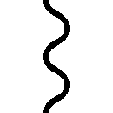

| ＤＴ覇王ドマイナー | |
| 仙波千広 | |
この本は縦書きでレイアウトされています。
また、ご覧になる機種により、表示の差が認められることがあります。
登場人物紹介 ―Characters―
ドマイナー
三国が争う大陸の統一を果たした英雄。
国民からの信頼も厚く、武力や知力も、超人的能力を持つ。
ただし、童貞。本名はドミナ・ジーン・テライン。
アルラマージ
ドマイナーの親友で、新王体制の重鎮。
容姿端麗なナルシストでフェミニストな男。
ベルジェ
魔法大国領ラマル島に住む女性ダンサー。
島の子供たちから慕われる心優しき性格の持ち主。
アルト
ラマル島でドマイナーが出会った子供。
ドマイナーに対し常にケンカ腰の態度をとる。
クレーム
悪名高いラマル島の領主。
悪政を敷き島民たちを苦しめている。
バルバレッタ
ラマル島の守り神。
《古き魔女》のひとりで強大な力を持っている。
ＤＴ覇王ドマイナー
―Contents―
この作品はフィクションです。
実在の人物・団体・事件などにはいっさい関係ありません。
全ての物語に始まりと終わりがあるように。
この物語は今、始まろうとしている。
そしてこれは、ある男の物語だ。
燃え上がるように赤い髪をしたその男は、自らをドマイナーと称していた。
ゆえに我々も、彼をドマイナーと呼ぶことにしよう。
雲の上にはただ静寂ばかりが広がる、新月も近い夜のことである。
遥か地上の灯の下では今宵もまた何事かの喧噪が起こっているのかもしれぬが、この高き空までは届かない。
その空を切り裂いて――――――
「わ――――――――っはっはっはっはっはっはっはっは！」
大空に突如として現れた一台の小型ジェット機が、その轟音奏でるエンジンよりもなお豪快な笑い声と共に、雲の波間へ消え去った。
刮目せよ。その声の主。
見慣れぬ高性能ジェット機を片手で揚々と操っていたその男。
炎をたぎらせた赤い髪。
隻眼の左虹彩は、真昼の天を写したままの空の色。
鍛え抜いた筋の張りつめし百年を経た巨木のごとき体軀で。
大いなる鉄の塊を繰り、闇夜を自在に駆け回っていたその男。
彼こそがドマイナー。
我らが主人公、ドマイナーである。
一方、ドマイナーによって乱された空気のあおりを食らい大いにそのバランスを崩したのは、ゴンドワナ大陸猛禽類最大の個体、ワシフクロウである。
平均的なゴンドワナ大陸人の倍ほどもあるその体を夜風に乗せ優雅な散歩を楽しんでいた彼は、たった今去った無礼な新参者を丸く静かな瞳で見送ると、高所ではめったに動かす必要のないその雄大な翼で数回空気をかき、心地よい風の上へと再び移動する。
そうしてやっと一息ついたワシフクロウの背後に、安寧は許さじとばかり、三つの機影が現れる。
殺気を感じとったワシフクロウは、戻ったばかりの風の上から再び離脱した。
ワシフクロウが明け渡した航路を、彼よりさらに二回りほども大きな三羽の機械の鳥が、きりもみ状に猛進し去っていく。
そのスピードときたら、ワシフクロウが抗議の鳴き声一つあげる余裕もない。
それに、なんだか寒くもなってきたようだ。
ワシフクロウは今宵の散歩を諦め、緩やかに高度を落としはじめた。
「おっ。新手か」
愛機テンダーロインを巡航速度に落とし、操縦席シートに背中を預けていたドマイナーは、テンダーロインからその機械の右耳へと届けられた敵接近の警戒信号に体を起こした。
「いや......さっきの奴らが追ってきたのか？」
ついさきほど、お気に入りの歌を口ずさみながら久しぶりのフライトを楽しんでいたドマイナーの平和を乱したのは、大戦が終わったことも知らず今も空を巡回しつづけていた三機の自動鳥形戦闘機である。
「なかなかやるな」
旧式の計器盤を素早く操作し、メインディスプレイの表示を切り替え必要な情報を読み取ると、ドマイナーはニヤリと笑った。
一方、その性能とは不釣り合いに旧式なテンダーロインの計器盤では、機体過熱を知らせるアラートランプが、いまだ強く点滅している。
「こっちはまだ無理がきかねえか......」
さきほど逃げる際に、エンジンを無駄にふかしすぎたのだ。久しぶりの空ゆえ調子に乗ってしまったのが大いに悔やまれるところであった。
が、ドマイナーの辞書に「後悔」という言葉は存在しない。
いや、存在したとしてもそもそも辞書など読まない男である。
ドマイナーは右肩から左腰にたすきがけにぶら下げている、銃のような工具のような不思議な形状の機械に手をかけ、操縦席のハッチを開放するスイッチを押した。
ゆっくりと開いていく透明なハッチの隙間から、凍えるような空気が操縦席へと入りこんでくる。
「......寒い......？」
ドマイナーは、驚きの声をあげた。
上空の空気が極めて低温であることなど飛行機乗りには常識中の常識だ。
しかし、高所には慣れたドマイナーをして思わず声をあげさせるほどに、今この場所の温度は、低すぎた。
その直後、テンダーロインの機体が大きくガタガタと揺らぐ。
ドマイナーは再びハッチを閉め、計器盤を確認した。上部に並んでいた緑色のランプの光が、一つ消えている。ジェットエンジンの一つが機能停止に陥ったようだ。しかし、自動鳥形戦闘機たちの攻撃が届くほどには、まだ接近を許していないはずであった。
「......何が起こってんだ」
ドマイナーは舌打ちして、メイン操縦桿の二つ隣にある黒い小さなレバーを一気に奥へと押しこんだ。
ドマイナーの操作に呼応して、テンダーロイン翼部のジェットエンジンが一斉に噴射を停止する。バランスをくずした機体が、その場でぐるんと回転し、機首が下を向くその直前。絶妙のタイミングで、ドマイナーはレバーを再び手前へと引く。
再噴射したジェットエンジンの力により、テンダーロインは真っ逆さまに分厚い雲の中へと姿を消した。
一瞬前までテンダーロインが飛んでいたその場所を、ドマイナー擁するテンダーロインにようやく追いすがった機械の鳥たちが放った羽毛型ミサイルが、目標を失くしたまま通過し、夜空へむなしく吸いこまれていく。
次の瞬間。
それを放った三機の鳥たちは一斉に何かに貫かれ、悲鳴のような爆発音とともに炎上。
灰燼と化しながら、墜落した。
――――イヤアアアアアアアアアアアアアアアアアアアアアア............
厚い雲に月光が遮られ、自らの足のありかすらわからぬ闇夜の空。
ドマイナーの機械化された右顔面の――その耳に、何か声が聞こえたような気がして、ドマイナーは右耳の集音レベルを最大まで上げる。
が、何も聞こえない。
「何か......起こってやがるな」
ドマイナーは再び計器盤へ目を落とした。
超音波探査装置に熱分布分析装置、温度計、音源探査機、魔力測定器、緯経座標に地図と海図。
驚くなかれ。それら全ての情報を統合すれば――熱帯の暖海が広がると思われていた直下の海面から海抜数千メートルのこの近くまで、地図にはない、魔力を帯びた極低温の巨大な山が隆起している、ということになる。
いや、隆起「している」のではない。今もまだ隆起を「続けている」のだ。闇夜の中、音もなく、静かに。
「んな、アホな......」
ドマイナーがあっけにとられたその時、
――――イヤアアアアアアアアアアアアアアアアアアアアアア............!!
不運にも集音レベルを上げすぎていたドマイナーの耳に、強烈な――甲高い悲鳴が届く。
耳に、といっても、通常の聴覚器である内耳神経を経ず、脳へと直接送られるその音は、耳をふさいでも防ぐことはできない。ドマイナーはそれがわかっていながらも、思わず手のひらで右の耳をおおった。
「なんだ......？」
ドマイナーは右耳の集音レベルを普段通りのそれに戻しながら、テンダーロインの計器盤をのぞきこむ。
一方、テンダーロインの計器盤には、最大級の危険を知らせるランプが――攻撃哨戒よりも離脱を最優先せよ、との意を示すランプが、点滅していた。
「......仕方ねえ。わかったよ、相棒！」
ドマイナーはメインの操縦桿を思いきり引き倒し、常識的に考えればいまだ存在が疑わしいその「巨大な山」から遠ざかる方向へ機体を旋回させる。間一髪、ドマイナーがたったいま飛んでいたその空間を、巨大な角のようなものが薙いでいった。
「!?」
ぎりぎりで難を逃れた形になったドマイナーは、機体過熱の警告ランプが消えないのを横目で確認しつつも、エンジンブースターをオンに入れ、機首を再び上へと向け急速度で上昇する。
テンダーロインのエンジンが、きぃきぃぎぃぎぃと抗議するような音をあげた。
計器盤に表示される巨大な山は、まるで樹木が伸びていくのを早回しで見るように、次々とこの広い空間を侵食していく。
ドマイナーはその謎の敵から充分に距離をとったことを確認したうえで、腰のベルトの左側にぶらさげた閃光弾を取り上げる。
再びハッチを開き、立ち上がる。
右手で操縦桿を握ったまま、左手に持った閃光弾の安全ピンに嚙みつくと――それを抜き取りざま左手を振りかぶり、ぶん投げた。
ドマイナーの手から離れた閃光弾は、しばらく落下の後、破裂。
強烈な光を周囲にばらまく。
光に照らされた眼下の光景に、ドマイナーは思わず小さく声をあげた。
隆起を続ける、巨大な謎の山。
それは魔力を帯びた氷でできている。
そして氷の頂点は。天を仰ぐ頂上は。まるで、彫刻が施されたように整っていて。
その姿は、まるで。
まるで、泣いているような――――。
「女......？」
ドマイナーが呟くのと、その氷の山から長く伸びた氷の角がテンダーロインの腹部に直撃するのとは、ほぼ同時だった。
「しまっ......！」
ドマイナーを乗せたテンダーロインは、冷たい空気の中を真っ逆さまに落ちていった。
ちなみに。
たった今暗い海へと落ちていった、豪快なる赤い髪のその男。
すなわち我らが主人公ドマイナーは、いまだ女性経験がない――いわゆる、童貞である。
統一ゴンドワナ歴元年天行月宇ノ日。
ゴンドワナ大陸の新しい支配者、ドミナ・ジーン・テラインの戴冠式は、わずか一刻ののちに迫っていた。
新王ジーンの戴冠式挙行を大陸全土に発布したのは数週間前のこと。
以来その姿を一目見ようと、王都を目指し大陸中から続々と人が集まっている。
式当日の今朝ともなれば、日も昇らぬうちから民衆たちが王城の正面広場に押し寄せ、新王ジーンの名を口々に叫んでいた。
最も古き国《神国エスティア》から連なり、神よりたまわりし四聖獣に守られその王権をふるう《聖王ファッロ》の一族が代々その玉座につく《神聖王国エラスティア》。
そのエラスティアによって迫害された魔法使いたちの秘密ギルドをその源流とし、数百年前に生まれたとされる不老不死の魔女《暗黒魔女モルダビア》によって大いなる発展を遂げた《魔法大国ロジーナ》。
さらに、超古代に失われた機械文明の後継者を名乗り、異なる大陸より来たとされる機械人《機械皇帝ルドルフ》により建国された《機械帝国メカノイア》。
決して相容れぬ彼ら《強三国》により数百年の長きにわたり続いていた戦争をわずか一年の間に終焉に導き。有史以来初めてこのゴンドワナ大陸の統一を果たした英雄――それこそが、ドミナ・ジーン・テライン。
四つの平原と七つの山脈、九つの大河に十六の支流、三つの大国に数万余の離島を従えた、この大陸の覇者である。
「ドミナ・ジーン！」
「ドミナ・ジーン!!」
「我らの王！」
「新しき王！」
「我らの王！」
「新王ジーン！」
「新しい王、ジーン！」
聖王ファッロ一世が開き、今は新しき王ドミナ・ジーン・テラインが住まう、王都エメダイン。
天すらも今日、この日この時を祝うように、蒼空に輝く陽はますます白く、民衆の声はますます高く。一生分の歓喜と、興奮と、熱狂とを、王宮のバルコニーの奥で彼らの声に耳を傾けているであろう新しい王、ドミナ・ジーン・テラインへと捧げていた。
一方、王城の中では――――
「ジーン様！」
「ジーン王！」
「ジーン陛下あ！」
やはり、誰もが口々にその名を叫んでいた。
新しき王、ドミナ・ジーン・テライン。
赤い髪の下の、草原を駆ける少年のような、あるいは樹木に埋もれて何千年も生きた賢者のような、空色の隻眼。
それがあるべき玉座に、その姿は――――
なかった。
「馬小屋は探したのか!?」
彼になにげなくどつかれて転んだ時に痛めた腰がいまだ癒えぬ大臣が叫ぶ。
「もういちど見てくる！ またどこかに隠れて盗み食いしているのに違いないんだ！」
彼と連日の死闘を繰り広げる、食材倉庫の担当警備兵が怒鳴る。
「ベッドの下に落ちてないかも見ておいたほうがいいぞ！」
寝相の悪い彼の目覚まし部隊に配属された兵士たちが包帯だらけで走り回る。
皆が総出で、右に左に上に下、果ては表も裏もひっくり返し新王ジーンの行方を捜すなか、一人の青年が、寝乱れた服のまま大あくびをしながら現れた。
「ふあ、ああああ......」
後ろで緩く一つに束ねられた、青みがかった黒い髪。
最上級の絹糸を思わせる長い髪は、その持ち主が寝起きのままであることを示すようにところどころ無造作に飛び跳ねている。
「昨晩はさすがに少し、がんばりすぎてしまったかな......」
しかし、整った顔立ちと、優雅な立ち居振る舞いのゆえか、その乱れをもってしても、全体として決して雑然とした印象は与えない。
いや、それどころか。
「アルラマージ様ぁ......」
「お、おはようございますぅ......」
「――やあ」
乱れていればこそなお、切れ長の、睫毛の長い少しけだるげな瞳をなにげなく横へと流しただけで――行方不明の新王を探すことに必死になっていたはずのうら若き小間使いや、普段は慎み深い貴族の令嬢たちが、雷に撃たれたようにその場にすくみ頰を染めた。
「おはよう、僕の、昨日まで果たせなかった......そして、今日これからの恋人たちよ」
そんな女性たちへ向かってアルラマージは膝を折り、勇敢な騎士が高貴な姫君に求婚する時さながらの、深く、凜々しく、清らかで、そして至高の愛をこめた礼をとる。
女性たちの間から奇声があがり、ある女性は興奮のあまり仰向けに倒れ、ある女性は昨晩愛なき未来を誓ったばかりの婚約者へ別離を告げる口上を考え始める。
そんなアルラマージの背後に、しわだらけの頭をゆでだこのように赤くした老僧が、頭頂部からかっかと湯気を上げんばかりの剣幕で歩み寄った。
「アルラマージ様！」
「やあ、ロレンスじゃないか。おはよう」
「おはようじゃありません！ こんな日にまで、何をやっていらしたのですか」
本日の戴冠式の統括責任者でもある最高司祭ロレンスの言葉にアルラマージは、秋枯れの広葉樹の最後の一葉が落ちるのを惜しむような、哀愁を含んだ笑みを返した。
見る者の胸が、ただ切なき予感で絞り上げられるような、その微笑み。しかしそれにごまかされることなく、ロレンスは再び強く言った。
「な、に、を、やっていらしたのですか!?」
「何をやっていたか、なんて......言ってもいいのかい？ ここで？」
そう言いながらアルラマージがさらりと髪をかきあげると、またも周囲の女性たちがワーキャーと騒いだ。
「アルラさまあ！」「聞きたいけど聞きたくなあい！」「お妃様たちが羨ましいいいいん！」「お世話係になりたあああい!!」
恥も外聞も忘れたようにそう叫ぶ彼女らにアルラマージは軽く手を振り、振ったその手を己の白磁器のごとき首筋に当て、独り言のように呟いた。
「そういえば、少し喉が乾いたな......」
アルラマージが好むのは、彼曰く「情熱のように赤く、恋のように濃厚で、愛のように複雑な」赤ワインだ。それを知っている女性たちは、おのが身分を問わず我先にと地下の貯蔵庫へ駆け出した。そんな彼女らを微笑ましく見守るアルラマージの背後で、怒りに燃える老僧ロレンスの顔色は、湯の中でゆだるタコから、暖炉で燃え上がる鉄炭の色へと変化を遂げていた。
「アルラマジさま！」
「おや」
アルラマージはそう言って、ロレンスのほうを振り向いた。
しかし、振り向きはしたものの――――
「ありがとう......僕のために、用意してくれたのかい？」
アルラマージはロレンスの立つその背後に手を伸ばす。
アルラマージにつられ後ろを振り向いたロレンスが、おお、と声をあげる。
そこにいたのは、水を入れたグラスの載った銀のトレイを両手で捧げ顔を赤らめている、小間使いの少女だった。
さきほどロレンスが、気つけの水を持ってきてくれるよう頼んだ相手だ。
「いいところに戻ってきてくれた。ちょうど怒鳴りすぎて喉が乾いていたところじゃよ」
ロレンスはそう言って小間使いの少女を手招きする。
しかし。
少女の瞳はロレンスを素通りし、アルラマージに。
アルラマージただ一人に、引き寄せられていた。
「......アルラマージ様」
「......なんだい？」
「......どうか......これを」
少女は、透明な水のたゆたうグラスを、そのトレイごと。
そっとアルラマージのほうへと――差し出した。
「......いいのかい？」
「......いいんです」
「いや、よくないですぞ」
その水の本来の権利者である老僧ロレンスの言い分は、もちろん、誰にも通らなかった。
アルラマージの手が、少女の掲げるグラスの脚にそっと触れると、少女は、その手が自らの脚に触れたかのように、小さく身を震わせる。
アルラマージは一度そこから手を放し、一歩、少女のほうへと足を進め、少女が臆する間も与えず、その頭部を抱き寄せるようにしてさっとグラスをとりあげた。そして、水をたたえたグラスを天に掲げ、
「綺麗な水だ」
と言った。
小間使いの少女は、臆したように答える。
「ただの水ですわ」
「ただの水なわけはない。これほど特別な水を、僕はかつて見たことがない」
「いいえ、本当に......ただの水なんです」
過剰な賞賛に恐縮する少女に、アルラマージは不出来な愛弟子にこの世の真理を教えさとす優しき老賢者のごとく、尋ねた。
「君が――僕にとって特別な君が、持ってきてくれた水なのに、かい？」
「えっ......？」

えっ......？ じゃねえよ、と、その場にいた全ての男が、心の中でツッコんだ。
しかしアルラマージは周囲にかまわず続ける。いや、彼らにはもはや、周囲、というものは存在しない。アルラマージと、そして小間使いの少女にとって今、世界、とは、互いの存在だけを示す言葉である。アルラマージはグラスの水をひと口含み、
「香りも、味も、僕がこれまで飲んでいた水とはまるで別物だ。天上にたゆたう神酒のような味わい......これが、本当の水というものだったとは......ああ、もし......」
「もし......なんですの？」
「ああ、すまない。なんでもないんだ。本当に――なんでもないんだよ」
と、小間使いの少女から顔を背ける。その姿は、神に背き魔に堕とされた百の翼を持つ天使長よりもなお凄絶に、苦渋に満ちていた。
「ああ、アルラマージ様......いとしいかた、どうか続きをおっしゃって」
「おお......おお！ 君にそう乞われて、どうして拒める僕だろうか。知るがいい。笑うがいい――もし、君が毎朝僕のために水を運んでくれるのならこの世には水以外のなにものもいらないだろう、と......そう、思ったのさ。ここにいる男は、なんと愚かな男なのだろう。実らぬ恋に身を焦がす、哀れな蛍だ............笑ってくれて、かまわない」
「いいえ」
「え......？」
「笑いません」
「どうして」
「汲みます。朝も。昼も。夜も......アルラマージ様のために。アルラマージ様の......ためだけに」
「......ありがとう」
そして、震えながら初めて触れ合う手と手。アルラマージと小間使いの少女は、固く手を結び合い、見つめ合うのだった。じゃじゃじゃじゃーん。
「ア、ル、ラ、マ、ー、ジ、さ、ま!!」
アルラマージと小間使いの少女の狭間。
彼の親友である新王ジーンが名づけるところの、《アルラマージのロマンス劇場》空間。
その危険な空間の中央にとり残されてしまったロレンスは、不幸な老僧に同情を寄せる周囲のまなざしによってどうにか再び気力をふるいたたせ、二人の間に割って入った。
「正妃が三人、準妃が三十三人もいて、まだ足りないのですか！」
「え？ 何を言っているんだい、ロレンスは」
ロレンスの疑問に、アルラマージは少女の手を握ったまま答えた。
「僕はいつだって満ち足りている。足りないなんてことがあるものか。僕の目の前に現れる運命の女性に、僕は自らの全てを捧げてやまない。ああ、それが、妃を何人も持つという、世人の眉をひそめさせる結果になろうとも、僕は――」
「ああ、わかります。わかりますわアルラマージ様。アルラマージ様は、なにも悪くないのです。悪いのは、アルラマージ様に恋してしまったこの私......」
「なにを言うんだ！ 君の罪は僕の罪。僕は君への恋を背負って、地獄に落ちよう」
「ああ、アルラマージ様......！ 私はどこまでもついて参ります。たとえ行く先が地獄だろうと......！」
「なんということを......！ 生まれたばかりの赤子よりもなお罪なき君を地獄に導くなど、どうしてこの僕にできようか！」
「ああ、アルラマージ様......！」
「おお、愛しの君よ......！」
「ところでアルラマージ様」
再び開幕しようとしていたロマンス劇場をどうにか未然に防ぎ、ロレンスはアルラマージへ、ずい、とせまった。
「ジーン様を探しているのですが。どこかで見かけませんでしたかな？」
「え？ ドマイナー？」
新しき王。ゴンドワナ大陸の覇者。大戦を終結させた唯一無二の英雄。
アルラマージは、その男、ドミナ・ジーン・テラインを、ごく親しい一部の者しか使わない名で気安く呼んだ。
そして、さらに気軽な調子で、
「ドマイナーなら、ちょっと出かけてくるって」
と、笑顔で告げる。
「......はあ？」
ロレンスだけではなく、それを聞いていた周囲全体が凍りつく。
外から聞こえる国民たちの歓声。戴冠式のために何か月も前から用意した衣服や花や料理。国中から呼び寄せた貴族たち。それを放って――。
「出かけた......？ ちょっと？ え、その、どこへ？ いやもう戴冠式なんですが？？」
「ああ、そうだよねえ」
ロレンスの狼狽ぶりに、アルラマージは、うんうんとうなずいた。うなずいてはいたが、その手はたった今恋に落ちたばかりの小間使いの少女の手を握りしめ――明らかに、それ以外のことはどうでもよさそうだった。
「あの......お出かけといっても......いつもの気まぐれですよね？ きっとすぐにお戻りになられるんですよね？？」
ロレンスがわずかな望みを託し、アルラマージを見つめる。アルラマージは、期待に応えられなくて申し訳ない、と言わんばかりの表情で、小首をかしげた。
「すぐに、っていうんなら、難しいんじゃないかなあ、たぶん」
「な、なぜ......」
「『運命の嫁を探しにいく！』って言ってたからさ」
青い空。白い雲。そして、
「わ――――――――っはっはっはっはっはっはっはっは！」
水面をゆるがす、豪快な笑い声。
碧く。
どこまでも澄んだ海を前にして、ドマイナーは笑った。
何故か？
理由はない。
海を前にして、男は笑うものなのだ。
「......ニイちゃん、んなとこで何してんだ？」
波打ち際にとめた巨大な機械の上に立ち、腕組みをして、青いばかりの空と海とをながめ笑う男――見れば見るほど見るからに不審。そんなドマイナーに声をかけてきたのは、浜辺を通りすがった一人の老爺だった。
顔の下半分は白髪ばかりのヒゲでおおわれ、日に焼けた肌には深いしわが刻まれている。
左手は手首の先がなく、服装はといえば、この地方によくある薄手のタンクトップにハーフパンツ――の姿で台風に遭った後そのまま数十年無人島をさまよったんですと言われればようやく納得のいくような、服の名残がわずかに感じられるようなボロきれ。
そんな得体の知れない老人を、やはり得体の知れないドマイナーが、愛機テンダーロインの上から見下ろす。そして、光に照り映える白い歯を見せ、ニヤリと笑いかけた。
「せっかくだから海見物よ。今朝、ちょっとばっかり墜落してな」
「墜落ぅ？ どこからだ」
「そりゃあもちろん、空からよ」
老人は、ドマイナーの言葉に相好を崩した。
「なかなか小粋なホラを吹く野郎だな。空から落ちて、おめえも、その機械も、無事なはずねえだろが」
「いや......まあいいか。じいさんこそ、何してんだ？」
「今日はいい天気だから海にでも入ろうかと思ってやってきたら、ニイちゃんの笑い声が聞こえてな......」
「へえ、いい考えだな。ひと泳ぎするなら俺もつき合うぜ」
ドマイナーがそう言いながら、早や自分のジャケットに手をかける。
「気が削がれたから今日はやめたよ。自殺ってのも、なかなか難しいもんだな」
「自殺？」
「死ぬにはいい日だと思ったんだがな......」
老人が、惜しむような目で晴れた海を見る。ドマイナーは、さも不思議そうな顔で老人を見た。
「ただでさえ老い先短そうなのに、なんでこのうえ好きこのんで寿命を縮めるんだよ」
ドマイナーはそう言いながら、愛機テンダーロインの上から白い砂浜へ飛び降りた。
袖が破れ上腕部まで露出したジャケットが風にまくられ、足裏とかかと、それにつま先を金属で補強した革製のブーツが浜辺の白砂の中にずぶりとめりこむ。
「老い先短いとは、失礼な野郎だな」
「じいさんこそ、俺がいい気分になってる時に不景気な話してんじゃねえよ。なけなしの敬老精神も吹っ飛ぶぜ」
果たして本当にそんな精神があったのかどうかは疑わしいものの、とりあえずドマイナーはそう言って、続けた。
「死ぬほど辛いことでもあったのか？ 俺でよければ聞いてやるよ」
「......ゆきずりの男に話すことじゃねえよ」
老人はそう言って、腰のベルトにさしていた木の実を加工して作ったらしい水筒を抜き取ると、その中身を、ぐい、とあおった。
潮風にのって漂ってくる安酒の匂いに、ドマイナーは思わず手の甲で鼻腔を押さえる。
「そんなの飲んでるから死にたくなるんじゃねえか？」
「こんなもんでも飲まなきゃ、生きていけねえのさ。お前もいるか？」
「............そうだな」
差し出された水筒を言葉少なに受け取ったドマイナーは、その中身を一気にあおった。
「待てよ！ 全部は......！」
老人が慌てるも、すでに後の祭り。
「......予想通り、マズいな」
「俺の最後の、命の水を......」
ドマイナーは老人の嘆息を無視して、顔をしかめ口元をぬぐう。
そして、空になったそれの代わりに自分の腰にぶら下げていた金属の丸形の水筒を抜き取ると、老人の手に押しつけた。
「これは？」
「飲んでみろよ」
「なんだよ......」
老人はドマイナーから差し出された水筒を受けとり、くるくるとふたを回して中の匂いをかぐと、へえ、と感嘆の声をあげた。
そして中身を一口なめるように飲み、さらに目をみはる。
「こりゃあ......いい酒だ」
「ゆっくり飲んでいいぜ」
ドマイナーはそう言いながら、波打ち際にとめたテンダーロインに背中を預ける。
「食料庫から、一番いい酒を盗んできたんだ」
「おい、じゃあ、飲んじまった俺も共犯か」
「心配すんな。もともと俺のもんだよ」
「自分のものを盗むアホウがいるかよ」
「食料番がうるさくてよ......それより、どうだ」
ドマイナーはテンダーロインに寄りかかったまま、両手を頭の後ろに回し老人を見た。
「どうだ、って、何がだ？」
「死ぬ気がうせる味だと思わねえか？」
「......酒の味が原因じゃねえって言ってるだろ」
「空が青くて食い物がうまけりゃ、死ぬ理由なんて一つもねえだろ」
ドマイナーはそう言いながら、老人の酒が入っていた水筒をぽいと海に投げ捨てる。
老人はドマイナーから受け取った水筒を口に当てながら、波間にぽちゃんと着水し沈んでいく自分の水筒を他人事のように見守り――口元をほころばせた。
「......なんとも身勝手な野郎だな」
「よく言われる」
「世の中お前が思うほど単純じゃねえんだよ。だがお前みたいなやつ、嫌いじゃないぜ」
老人はそう言ってテンダーロインに近づくと、その機体を右手の甲で軽く叩いた。
ドマイナーの愛機テンダーロインの機体の形状は、翼を広げた鷹が獲物を狙っているような前傾構造。主翼と尾翼にはジェット噴射口がぶら下がっており、安易に近づいてきた老爺を威嚇するようにその黒い口を見せつけている。
が、老人は気にせずその中に手を入れ、内側についているすすをぬぐいとる。そして指についた黒い汚れを、目を細めてすりつぶした。
「これも、悪くねえ――いや。文句なしに、いい機械だ」
「俺の相棒だからな」
ドマイナーは自慢げにニヤリと笑った。
「じいさん、機械技師か？」
「元、だがな」
「じゃあ、ここらは旧機械帝国の領土ってことか？」
ドマイナーは、少し首をかしげながら尋ねる。
頭の中には、昨晩遭遇した、女性の顔をした巨大な氷山の姿があった。魔力測定器の針が振りきれていたことから、ドマイナーはあれを魔法によるものと見ていたので――
「てっきり旧魔法大国のあたりかと思っていたんだが......」
「機械帝国からわざわざ魔法大国のほうを、しかもこんな辺鄙なほうを目指してやってきたのか？ ニイちゃん、ずいぶんと、もの好きだな」
「機械帝国から来たわけじゃねえし、魔法大国を目指してたわけでもねえよ。向かっていたところは別にあったんだが、ちょっと遊んでたらどこにきたのかわかんなくなっちまって――そういや、この島はなんて島だ？」
ドマイナーが尋ねると、老人は呆れたように肩をすくめた。
「ここは魔法大国領土の島、ラマル島だよ。そんなことも知らねえで海見て笑ってたのか？ 呑気なことだ。運がよかったな」
「運？」
「こんなでっかい機械で来たんだろ？ この島に近づく機械はバルバレッタが島の周りに張った結界魔法で片っ端から海に叩き落とされちまうんだよ。よくぞここまで無事に辿り着いたもんだ」
「結界魔法......島の周囲全体に、か？」
ドマイナーは思わず驚きの声をあげた。一般的に、魔法は効果範囲が広いほど大量の魔力を消費し、しかもコントロールが難しくなるのだ。この島が、あまり大きな島ではないとしても――。
「バルバレッタってのは大したやつなんだな」
「そりゃあ......魔法大国に伝わる《古き魔女》の一人、《嘆きのバルバレッタ》だからな」
「《古き魔女》!?」
「領主がどこかから、《生命水晶》を手に入れてきたらしくてな......」
古の大魔術時代に存在した、現在では失われた強力な魔法を操っていたとされる魔女たちを、総じて《古き魔女》と呼ぶ。そして、その時代の魔女たちが、百度死ぬよりもなお壮絶なる苦痛と引き換えにして己が生命を永遠とするために作り出したもの。
それが、《生命水晶》だ。
その名の通り魔女の生命そのものを封じた正多面体のその水晶は、相性の良い魔力を持つ相手を――便宜上《契約主》と呼ばれる相手の魔力を吸収することで、そこに封じられた生命を一時的に復活させることができる。
が、しかし。
「怖えことするんだな」
「怖い？」
「《古き魔女》だぞ。ほら、あいつらって、怖えっつーか......面倒くせえっつーか......」
「女なんてものは大抵がやっかいなもんさ。そこがいいんじゃねえか。それより、見ろよ。ちょうど今――来るぜ」
老人が水平線を指さした。
老人が示す先で、何か白いものが、卵から抜け出す幼虫のように盛り上がっている。
それはやがて逆向きに成長していく氷柱のように、尖端をとがらせながら、上へ、上へ、上へ、さらに上へと伸びる。そして雲にも届こうというところまで、まるで天を突かんとする鋭い剣のように伸びたかと思うと――たちまち、霧のように消えた。
「今のは......」
「バルバレッタの結界魔法に、はぐれものの自動鳥形戦闘機でもひっかかったんだろ」
「自動鳥形戦闘機は、空を飛んでるものしか反応しねえんだからあんなでっかいの出してわざわざ撃ち落とす必要もねえと思うんだがな......だいたい、戦争は終わったってのに機械を無差別攻撃するなんて何考えてんだ？」
「ここの領主は臆病者なのさ」
並んで海を見るドマイナーと老人の元に、冷気をはらんだ風が届く。
目の前の暖かい海にそぐわぬその冷風は、さきほど消えた天まで届く白い剣――バルバレッタの結界魔法だという、巨大な氷の剣によるものであろう。
しかしドマイナーは、腕組みをしたまま首を捻った。
「......俺が見たのとは、少し違ったな」
「なんだニイちゃん、見たって、夢でも見たのか？」
「夢でもなんでもいいけどよ。俺が見たのは、もっとでかくて......女の顔が」
「女？」
「い、いや、なんでもねえ。それに......」
「それに？」
ドマイナーは、昨晩見たものの説明をしようとして――突如海上に出現した、天を仰ぎ泣く巨大な女の顔について説明しようとして――しかしどうにもうまく説明できる自信が持てず、あれこれ考えた末、言葉に窮する。それで、結局。
「......まあ、なんでもねえよ」
と言った。
「なんだよニイちゃん、急に秘密主義になったな」
「べつに隠してるわけじゃねえよ。ジイさんも言っただろ？ どうも難しいんだ。女ってのは......」
「......まあ、そうだな」
ドマイナーの唐突な言葉に、何故か老人もまた、思わしげにうなずいた。そして。
「なあ、ニイちゃん。やっぱり俺......海、入るわ」
「酔っぱらって海に入ると危ねえぞ」
「ああ、死ぬかもな......死ねるかもしれねえな。今日こそは」
老人がそう呟くのを見ながらドマイナーは――両手を上げて、思い切り伸びをした。
「......ま、どうしても死にてえってんなら、俺は止めねえよ」
「すまねえな。いい酒もらっといて......」
「気にすんなって。俺が何言ったって結局のところ、ジイさんの命はジイさんのもんだからな。ジイさんの好きにするしかねえよ」
「ああ」
「とはいえ、俺の目の前で死のうってんなら、ぶん殴ってでも止めるからよ」
ドマイナーのよくわからない理屈に、思わず老人が吹いた。
「おいおい、止めるのか、止めねえのか、どっちなんだよ」
「俺も好きにするから、ジイさんも好きにしろってこった。ただ、今日は天気もいいことだし――とりあえず、寝ようぜ」
ドマイナーはそう言うなり、砂浜にごろりと大の字になった。
「おい......」
「悪いな、眠くてよ。昨晩はいろいろあって徹夜だったんだよ。俺が寝るまでのちょっとの間でよけりゃ......ジイさんの話も聞いてやるぜ」
そう言いながらドマイナーは目を閉じる。それに誘われるように、老人はその横に腰を下ろした。
「本当に、変な野郎だな」
「まあな......それで？」
「......俺は元々、機械帝国の出身だ」
「みたいだな」
「たまたま輸送中の事故でここまで流されて......」
「おう」
「その頃はまだ戦争の終わりなんぞ見えなくて、機械帝国はこの島の敵国だった。とはいえ辺鄙なこの島じゃ戦渦なんてもんはないに等しかったが、ここの領主のクレームって野郎は小心者の臆病者でよ。俺は左手を機械化していて見るからに機械帝国出身で――ばれたら、殺されると思った。しばらくの間は機械化している左手を隠して過ごしていたが......やがて、この島で生きていく決心をし、体の機械部分をとり払うことにした」
老人が、先のなくなった左手首をさするようになでながら、言った。
「設備の整っていない状態で生体機械をとりはずすなんてのは何度も気絶するほどの激痛だったが、俺はどうにかそれをやりきった......女の、ためだ」
「女か......」
「そうだ。男がうっかり死にたくなっちまうのも、限界以上に頑張っちまうのも、大抵の場合、女が絡んだ時だ。そうだろ？」
「まあな............」
「俺にはもったいないくらいの、いい女だった。幸い向こうも俺を機械帝国出身だと知りながら好いてくれて――一生を共にする約束をした。二人でなら、貧しくともこの島でやっていけると思っていた。だが......」
「............」
「だが......ニイちゃん？」
「..................」
「............聞いてるか？」
「........................」
「..................本当に寝やがるとは思わなかったぜ......」
老人が再びドマイナーのほうを振り向いた時には。大の字に横たわったドマイナーはその巨体を暖かな潮風にさらし、安らかな寝息を立てていた。
その寝顔を呆れたように見ていた老人は――やがて、笑った。
「ま、......死ぬ前に。もう一日くらいは、朝日を拝ませてもらうとするか......」
老人はそう言って立ち上がると、渡された水筒をドマイナーの側に置き、どこへともなく去って行った。
なお、ドマイナーの名誉のために補足しておくと、昨晩の、いや、昨晩から今朝にかけての彼はといえば、突如現れた巨大な氷の化け物によって、数千メートル上空から海へと墜落。無理をさせすぎたテンダーロインを背にかついで、朝までかけてこの海岸まで泳いできたのである。
いかに強靭を誇るドマイナーの肉体であっても、とうに限界を超えている。
そんな状況だったものだから、横になった途端うっかり眠ってしまうのも無理はない。
決して、酒を飲みすぎて眠ってしまったとか。
天気がよかったのでついポカポカ気持ちよくなって眠ってしまったとか。
女の話になるとどうもわかんねえなーと思っているうちに、なんとなーく眠ってしまったとか。
そういう理由で悩める老人を放って眠ってしまったのではないのだ。
たぶん。
おそらく。
人魚のくせに海で溺れたというちょっぴりドジな絶世の美人魚と恋に落ち、これぞ俺の嫁と心に決め夕日を見ながら結婚を申しこもうとしたまさにその時――ドマイナーは自らが老人になっていることに気がついた。
そのうえ、いつの間にやら小人の国に迷いこみ縛り上げられている。
『――よーいしょ！ よーいしょ！ よいしょ、よいしょ、よいしょ！』
複数の小人たちが息の合ったかけ声とともに、ドマイナーの体を引きずっていく。
開いたドマイナーの目に、強烈な太陽の光が飛びこんできた。
「......やべえ。本当に夢見てたぞ」
ドマイナーは呟く。そして――夢の中と同じように、自分の体がぐるぐる巻きにされ、地面を引きずられていることに気づいた。
しかも、背中や足の裏がなにやら冷たい。水にぬれているような気がする。
「......なんだこりゃ」
「あ、目ぇ覚ましたぞ！」
「いまさらかよ！ 重かったなあ」
ようやくはっきりしてきた視界には、空に輝く白い太陽。それを背にドマイナーを覗きこむ、小さな子供たちの、顔、顔、顔。
どの顔も日焼けだか泥だかで競うように黒く、幼い。その子供たちのどんぐりのように丸い瞳が、目を覚ましたドマイナーをあますところなく観察し、そしておもむろに――
「人相悪い！」
「怖い！」
「やっぱ機械人だぜこいつ！」
見た目通りの幼い声で、口ぐちにきゃんきゃんと叫んだ。きゃんきゃん叫んで身を引く子供もいれば、小さな手をドマイナーに伸ばし、機械化している右目だの右耳だの、腰にぶらさげている様々な機械だのにぺたぺたと触る子供もいる。
「お前ら、どけ！」
サーカスの猛獣よろしく、なにか布のようなもので縛り上げられ見世物状態になっているドマイナーは、怒鳴りつけた。
が、自らの身の安全を確信している子供たちは、それに対しても、なおのこときゃあきゃあ騒ぎ立てるばかりで、ドマイナーの意思を尊重してくれる様子はいっこうにない。
「怒鳴った！ 怖ええ！」
「機械人て筋肉すげーんだな！ この腕、ねえちゃんの腰より太くね？」
「この腹、なんだよ、硬え！ チィがあと十人くらいのっかれんじゃね？」
などなど。勝手なことを言っては、ドマイナーの生身の腕や顔をその小さな手で容赦なくぺしぺし叩き、さらにはドマイナーの上に何か小さな、獣のようなものを乗っけてくる。
「おい、チィを変なのに近づけんなよ」
「アルト、さっきからうるせえな。お前はひっこんでろよ」
「ひっこんでろってなんだよ。俺は、チィを心配して」
「フン、なまっちろいナリで自分のこと俺、とか言っちゃって。生意気なんだよ、お前」
しまいには、子供たち同士でわいわいと小競り合いまではじめる始末だ。お腹の上に乗せられた小動物らしき生き物が、ドマイナーの肩のほうへと移動し、その髪をぐいぐいとひっぱってくる。
「............」
ドマイナーは片方の眉をつり上げしばらく憮然としたのち、おもむろに。
「......よーい......」
縛られて地面に仰向けになった状態から、腰をあげ、全身を丸めて――――
「――――しょっとお！」
地面に丸まった状態から百三十五度の回転力を己の背と腹部の筋力のみで稼ぎ。
空気を裂く唸りとともに、立ち上がった。
「......え......？」
自分たちの小競り合いに気をとられていた子供たちは、そこでようやく、突如として背後に現れた――太陽を背に髪からぼたりぽたりと水をしたたらせた、怒れる巨漢の姿に気がついた。
「よお、ガキども」
ドマイナーの上背と横幅は、ゴンドワナ大陸成人男子平均のそれを軽く超える。
さらに、その鍛え上げられた筋肉が内包する膂力は、凶暴性と怪力とで知られるゴンドワナ大熊にいっそ近い。
「大人に対する礼儀ってもんを教えてやろうか......？」
そして、そのゴンドワナ大熊すらもひと睨みで追い払うドマイナーの眼光が子供たちの上に注がれると――大騒ぎしていた子供たちは、時が止まったようにその場で硬直した。
そんなドマイナーの左頰を、柔らかくぷにぷにした何かが、ぺちぺちとはたいた。
ドマイナーは左を見た。
すると、もみじのような手で自分の頰をはたく人なつこい赤子の顔と、あごがぶつかりそうな至近距離で対面する。小動物だと思っていた生き物は赤子だった。
「......ん？」
「う......うああああ、うああああああああああああああぁぁぁん！」
「おい！ なんだ、こいつ！」
対面した、と思う間もなく、笑顔だった赤子の表情が泣き顔に変貌。どうやらドマイナーの顔が怖かったらしい。そしてその泣き顔が、視界の下方へと消えていく。
「――――おい！」
ドマイナーの肩から足下の砂地へと、小さな赤子が頭から落下している。
手を伸ばし赤子をすくいあげようとするも――体を縛り上げられている状態のドマイナーの手は、咄嗟に思惑通りに動かない。ドマイナーは舌打ちする。
「く、そ......っ！」
子供たちの間から悲鳴があがる。
そして次の瞬間――それは、歓声に変わった。
腰から体を折り曲げたドマイナーの白い歯の隙間に、薄手の布が挟まっている。
その布の伸びた先には、今しも命の危機にさらされていた赤ん坊が、ぶらんこに揺られるようにぶら下がって、キャッキャと喜んでいた。
ドマイナーは、赤子をつかまえるために不自然な形にねじまげていた上半身をそのままさらに折り曲げて、赤子を地面に下ろす。
「......ったく」
そこにいた子供たち全員と、そしてドマイナー自身にも安堵の空気が流れるなか。
周囲からアルトと呼ばれていたボサボサの短髪を後ろで小さく結んでいた小柄な子供が、後ろで呆然と立っている自分より上背のある子供の胸ぐらをつかんだ。
「――バド！ だからチィをあんなところに乗せるなって言っただろ！」
「お、俺が悪いんじゃねえよ！ アルト、てめえがごちゃごちゃ言うからだろ！」
胸ぐらをつかまれたほうのバドという子供が、アルトと呼んだ子の頰を張り飛ばす。
アルトは、土の上に倒れこんだ。
子供といっても、胸ぐらをつかまれたバドという少年はどうやら居並ぶ子供たちのなかでは年かさのほうらしい。その声はすでに変声期を過ぎた低音で、体格もいい。
一方、アルトと呼ばれている子の声は、まだ声変わり前なのか高めのトーン。周囲とのやり取りを見るかぎり決して幼いというほうではないようだったが、小柄なたちなのか、あまり栄養状態がよくないらしい周囲の子供たちに比べてもさらに一回り細く見える。倒れた拍子に何かですったらしく、その足には血がにじんでいた。
「おいクソガキ！ 何やってやがる！」
バドがさらにアルトの背を蹴飛ばそうとするのを見て、ドマイナーは二人の間に割って入った。
「なんだよてめえ！ 関係ねえだろ！」
「関係あるようにしてやろうか？ かかってこいよ」
「......あ？」
「弟イジメは気がひけるだろ。ケンカがしてえんなら、俺が相手になってやる」
ドマイナーの言葉に、バドはあからさまに尻ごみする。全身がしばられた状態のドマイナーであっても、まるで油断がならぬ相手であることは、今見たばかりだ。
「こ......子供同士のケンカに、大人がクチ出してんじゃねーよっ！」
「なるほどな。お前、自分より弱そうなやつが相手じゃねえと、ケンカもできねえのか」
ドマイナーはバドの顔を覗きこみ、挑発するようにニヤリと笑った。
「――男じゃねえな」
バドの顔が怒りで赤くなる。ドマイナーは再び体を起こしながら、笑うように叫んだ。
「男なら――かかってこい！」
「やってやるよ！」
巨漢ドマイナーと、体格がよいとはいえ少年にすぎないバド。
二人の間に、一触即発の緊張感がみなぎる。
しかし、敵は後方にあり。ドマイナーは背後に殺気を感じ、大きく開いていた両足を本能的に内側に閉じる。が、時すでに遅し。
「ゔごぉぶ......っ」
つぶされるカエルのような鈍いうめき声をあげて、ドマイナーは前のめりに倒れこんだ。
その後ろには――見事な金的を決めたアルトが毅然とした表情で立っている。
周囲で見ていた少年たちが、思わず自分の股間を手でおおった。
「誰が誰の弟だって？ バカ機械野郎」
うずくまるドマイナーへ、アルトが抑揚のない声で告げる。
ちなみに「メカニ」とは、神聖王国や魔法大国の住民たちが体の一部を機械化した機械帝国の人間に対して使う、差別的な意味合いを強く含む侮辱語だ。
「お前こそ弱い者いじめしてんじゃねーか。それに、バドと俺は兄弟なんかじゃねえよ」
「だからってお前......男には蹴っていいところといけないところがあるだろうが......っ！」
涙目でうずくまるドマイナーを、アルトは怒りを含んだ目で見下ろす。
「股間蹴られたくらいでウダウダ言ってんじゃねえよ。兄弟でもない俺たちがどうして一緒にいるのか教えてやろうか？ ここにいるやつらにはもう、父ちゃんも母ちゃんもいねえ。それもこれも、てめえら機械野郎どもが戦争なんかしかけてくるから――こんな小さな島にまで攻めこんでなんかくるから、殺されたんだぜ」
アルトはそう言った後、ほんのわずか沈黙すると――再び、蹴り足を引いた。
「機械野郎はさっさと、この島から出ていけ！」
「――アルト。やめなさい」
子供たちの甲高い声とは明らかに異なる。高音だが静かな響きを持った声が、子供たちの壁を割って聞こえてきた。
ドマイナーはうずくまったまま、強烈な磁力にでも引かれたように、白い砂地のその向こうへと視線を向ける。
寄せては返す波に洗われて、儚く消えてしまう足跡を一歩、また一歩と残しながら――。
女性が一人、歩いてくる。
この島の強い太陽に焼かれたのであろう、浅黒い肌。
細身だがおうとつのはっきりした肢体には、大小の花が配置された薄手の一枚布を巻きつけ、腰には小さなストールを巻いている。
ゆるくウェーブがかかった黒い髪は腰のあたりまで伸びていて。
薄い水色に塗られた長い爪の先には同じ色の蝶がとまり、小刻みに羽ばたいていた。
「でも、ねえちゃん」
アルトは、今までとはうってかわった甘えるような声で、その女性に訴えた。
「アルトの気持ちはわかるわ。でも、チィを助けてくれた人でしょう？」
アルトはなおも何かいいたげに口ごもったが、女性の悲しげな眼差しに気づくと、
「......わかったよ」
と、肩を落とし、後ろに蹴り上げようとしていた足を戻した。
女性はアルトの頭を軽くなで、ドマイナーの側にしゃがみこんだ。
ドマイナーもまた、上半身を起こす。
薄水色の蝶がふわりとドマイナーの髪をなで、その女性へ向かって飛んでいく。
女性が手を差し出すと、蝶は、細く華奢な浅黒い指の中へ溶けるようにするりと入っていく。そしてその皮膚の下で、空を飛ぶように優雅に羽根をはばたかせ、手の甲から上腕部へと昇り肩甲骨に達したところで、再び空気中に迷い出た。
魔法大国ロジーナの住民が好んで身につける、魔法の入れ墨、マジックタトゥだ。
タトゥに魔法回路が組みこまれているため、魔力は持っているが魔法学の知識がない一般人でも、多少の魔法を使うことができるというしろものだ。とはいえそのほとんどは、単なる装飾を目的として彫られていることが多い。
薄水色の、その魔法の蝶と同じ色をした指先が、ドマイナーに届こうというまさにその時――ドマイナーは膝立ちのまま、一歩、後ろに下がった。
「......何か？」
「い、いや............」
「怖がるようなことはなにもしないわ。ほどくだけよ」
そう言って。ドマイナーが退いたその一歩をさらに詰め、女性が再び、ドマイナーへと手を伸ばす。その指先が己に接するその刹那、ドマイナーは思わず目をとじた。
しゅる、と音を立てて、ドマイナーをしばりつけていた布が一枚、ほどかれる。
体外に出ていた魔法の蝶が、女性の手の甲から再び皮膚の中へと移動した。
「ほら、皆も手伝って」
女性に言われ、子供たちが、不自然な姿勢のドマイナーにわらわらと群がってくる。
ドマイナーは再び目を開く。すると、その女性の、濡れたように黒い瞳に真正面から見つめられた。
「チィ坊を助けてくれて、ありがとう」
蜜漬けの果物を溶かした蒸留酒のような、甘ったるいのによく響く声が、ドマイナーの鼓膜を震わせる。
「い......いや......」
ドマイナーは口の中でもごもごとなにごとかを呟き、女性から顔を背けた。
「あなたもかなり危ないところだったけど。もう、体の下まで波が押し寄せていたのよ」
「波......？」
ドマイナーは再び、女性を見た。女性は口元に少し笑みを浮かべながら、ドマイナーをしばりつける大量の布を一心にほどいてくれる。
ドマイナーは思った。
美しい、と。
「ほら、あそこよ」
ドマイナーは夢うつつとなりながら、その美しい女性が指し示すほうを見る。
波打ち際にとめていたはずのドマイナーの愛機、テンダーロインが、今はその機体の半分ほどまで海に沈んでいた。
「満ち潮か......」
「ここらは、干潮と満潮の差がはげしいの。持ち上げて運ぶにはあまりに重かったから、荷物みたいな扱いにしてごめんなさい。起こそうとしたんだけど、起きなかったの。それなのに、波はそこまで迫ってるし......」
「俺たちは、機械野郎なんか見捨てて帰ろうって言ったんだぜ」
ドマイナーを縛る布をほどくのに協力していたバドが、ふてくされた表情で言った。
「でもねえちゃんは助けなきゃって言うし。でっけえ体に俺らの服やら腰布やら、巻きつけるの大変だったんだからな」
「ロープを探している時間はないから着ている服や腰布を巻きつけて引きずり上げよう、っていうアイデアを出したのはアルトで、それを率先してやってくれたのはバドよ」
女性は、遠くで一人、赤子のチィ坊をあやしているアルトと、すぐ隣で自分を手伝っているバドとに視線を送り、最後にドマイナーを見た。ドマイナーは思わず目を逸らし、それをごまかすように周りを見た。
ドマイナーをぐるぐる巻きにしていた大量の布がほどかれるたび、周囲の子供たちはわいわい言いながらそれに袖を通し、あるいは腰に巻く。ある子供の服は小さすぎ、ある子供の服は大きすぎる。そして、どの服も、何度も洗ったものであることを示すように、まだらに色あせ、裾はほころび、穴が開いていた。
「......礼を......言わなきゃ、ならねえようだ」
「ヘッ、命の恩人さまにずいぶんな態度をとってくれたよなあ、この野郎」
「バド！ まったくもう、この子は......」
女性はバドの頭を軽くはたくと、ドマイナーに笑顔を向ける。
「気にしないで。いつもの散歩のついでに見つけたから助けただけよ」
ドマイナーは、再び真正面から、女性を見た。
彼女は、微笑んでいる。
光が、彼女を包みこんでいる。
美しい。
そしてなんと――――優しい。
この時ドマイナーは、目の前の女性に対し完全に恋に落ちていた。
なお、女性のほうの気持ちは――定かではない。
「......それよりも......」
女性はそんなドマイナーに気づく様子もなく、少し愁いを帯びた声で何かを言いかけ、口ごもる。
「......ごめんなさい、なんでもないの。ねえ、あなた、早くこの島から出ていったほうがいいわ。生きて流れ着いたのはよかったけれど......ここは、機械人には生きづらい島よ」
女性はそう言って立ち上がり、身をひるがえす。
「あ！」
ドマイナーは膝立ちのまま思わず声をあげる。その声の大きさに驚いたのか、女性は再びドマイナーを振り向いた。ドマイナーは口を開き、
「その......出て行きたくても、の、乗ってきた機械が故障していて......どこかに、機械部品を扱っている店はないかなー、なんて......」
そうしどろもどろに言葉を紡ぎながら、愛機テンダーロインに心の中で詫びる。
――――ダシにしてすまん。
と。
「あら......」
女性の顔に浮かぶ愁いが強くなる。
ドマイナーの良心がずきりと痛む。
テンダーロインが少々ばかり故障しているのは本当だ。しかし、こう見えてドマイナーは予備の部品を準備せずにフライトに出るほど愚かではなく、テンダーロインもまた、これくらいの故障で飛べなくなるほどヤワな機体ではない。
だが、ここでただ別れてしまっては二度とこの女性に会えないと――幾多の死闘をくぐり抜け極限まで研ぎすまされたドマイナーの直感が、こんな時にも鋭く働いた。
「探し物があるのなら、島のはずれにあるガラクタ市に行ってみるといいわ」
女性はしばらく考えこんだのち、そう答える。
「この島じゃ機械は歓迎されないわ。あるとしたらあそこくらいね。ここからだとちょっと遠い場所にあるから......アルト。案内してあげてくれる？」
「俺？」
チィ坊を抱いたままのアルトが、顔をしかめた。
「......あいつ？」
そのアルトに、さきほど大事なところを容赦なく蹴っ飛ばされたドマイナーも、同じように顔をしかめた。
「いやだよ機械野郎と一緒なんて。こういう時こそ、いつもえばりくさってるバドの野郎がやればいいだろ」
「おい、なんだよアルト、その言い草は！」
「バド、やめなさい。バドには薪割りをお願いしているし......それに」
「薪割りくらい、俺だってできるよ」
「アルトにゃ無理だって。大人用の斧もまだ持てないくせに――」
「バド、うるせえよ、黙ってろ！」
「二人ともやめなさい！ ねえアルト。バドにお願いしたら、またケンカになっちゃいそうなんだもの。こういう時、あなたが一番頼りになるの。お願いよ」
アルトに向かって、女性は両手を合わせた。
アルトは、バドを睨み、ドマイナーを横目で見て、不満げに女性の顔を見る。そして、何度もため息をつきながら「わかったよ」と答え、抱いていたチィ坊を女性の腕へ渡した。
もしかしたらこの麗しい女性ご本人が案内してくれるかもしれない、という浅薄な目論みがもろくも崩れ去ったドマイナーは、がっくりと肩を落とす。
女性はそんなドマイナーをじっと見つめ――再びドマイナーへと近づくと、その目の前に立ち、左手を伸ばした。
「え......？」
意図のわからぬ女性の行動に、ドマイナーは頰を赤くして、思わずごくりと喉を鳴らす。
すると女性の指先は、ドマイナーの機械化された右の頰に、触れた。
「――――――？！！！」
ドマイナーの頭の中で、すさまじき大噴火が発生する。
そうとも知らず、彼女の細い首筋と華奢な肩、そして柔らかそうな腕を伝って、薄水色の蝶が――ドマイナーの顔へと近づいてくる。
「......お名前を聞いてもいいかしら」
「......ど............」
「......ど？」
「どまい、なー」
ドマイナーは耳の裏まで赤くしながら、どうにかそれだけを答える。女性の指先からは、その肌に潜む蝶の羽ばたきに合わせ、上等の香油に朝摘みの薔薇を溶かしこんだようなえもいわれぬ濃い香りが、ふわりふわりと漂ってきた。
「......ドマイナーさん、ね？」
名前を呼ばれて顔を赤くし全身の毛穴から汗のにじみ出るドマイナーに、女性は優しく微笑みかけると――自分の腰に巻いていたストールをほどき、彼女と同じ、甘いような花のような匂いの漂うそれを、ドマイナーの顔の右半分を隠すように巻いた。
「............！」
ドマイナーは、急上昇した熱で、己が溶けてしまうような錯覚を覚える。
「チィ坊を助けてくれたお礼よ。この島で平和に過ごしたかったら機械人ということは隠しておいたほうがいいわ。この――素敵な右目もね」
「あ、ありがとう......ゴザイマス。その」
「私の名は、ベルジェ」
彼女のむき出しの肩から飛び立った薄水色の蝶は、彼女の顔と髪とをくるりと回って胸元にとまり、その魔法の羽根を休める。
それはまるで彼女の胸元に、控えめな一輪の花が咲いているかのようだった。
「夜はいつも《ラマラマ》って店で踊っているの。今夜をこの島で過ごすのなら――」
「は......」
「一夜の夢くらいなら、見せてあげられるかもしれないわ」
そういってベルジェは長い睫毛を伏せると、ドマイナーから手を離し――今度こそ振り返らずに、立ち去った。
何羽もの薄水色の蝶が、その体からひらひらと飛び立ち。その一羽がふとドマイナーのほうへと迷い、本来の宿主であるベルジェを見つけ、するりと肌の中へと溶けていく。
子供たちは、跳ね、蝶とたわむれながら、ベルジェについていく。
ベルジェの後ろ姿を見送ったドマイナーは、へなへなとその場に座りこんだ。
そのドマイナーの背中に、不機嫌そのものといった表情のアルトが蹴りを入れる。
「痛て！」
「ねえちゃんにデレデレしてんじゃねえ。案内してやるからさっさと立てよ」
「だっ、誰がデレデレしてんだよ！」
「てめえだよ、このエロ機械野郎が！ 言っとくがねえちゃんのあれは、社交辞令――店に来てもらうための営業、ってやつだからな。お前が特別ってわけじゃねえぞ。誰にでも言うんだ。勘違いして近づこうとすんなよ！」
「も――もちろんわかってる。わかってるに決まってるだろ？ それくらいとっくの昔に、わかってたぜ」
あまりわかっていなかった様子で、ドマイナーが答える。アルトはそんなドマイナーを睨みつけた。
「万が一これ以上ねえちゃんに近づいてみろ。今度こそその汚ねえ股間、蹴りつぶしてやるからな！」
「はっ！ てめえこそちっこいナリして、うっかりキンタマ踏み潰されねえよう気をつけな、クソガキ！」
こうして浜辺にとり残されたドマイナーとアルト。
二人の道ゆきは、早や不安であった。
ラマル島には、大小公私を含めいくつかの市場が点在するが、ドマイナーが流れ着いた浜辺から「ガラクタ市」まではかなりの距離があった。
舗装された公道沿いで歩くと半日ほどはかかるとのことで、公道から逸れて鬱蒼とした森の中を歩くこと十数分。高い岩山の壁にあいた横穴から「立ち入り禁止」の看板を無視して入ると――。
中は、周囲全体から淡く発光する青い水晶の原石が突き出た、巨大な鉱石の洞窟だった。
「へえ......大したもんだな」
「うるせえな」
生来声の大きなドマイナーの独り言に、アルトはいまいましげに舌打ちをする。
「お前が喋ると、気が散るだろ。うっかり道を間違えたら面倒なことになるぜ」
この洞窟は、青水晶の鉱路として人工的に掘られたものであるらしい。青水晶は数ある魔水晶の中でも特に魔力をためる性質が強く、《生命水晶》の材料としても使える、魔法使いたちにとっては価値の高い鉱石だ。
その青水晶の鉱脈の隙間を、時折、蛇のように細長くうねった黒い影が、チラチラと行き来している。
洞窟に入る前にアルトが説明したところによれば、この鉱山、いや、ラマル島全ての青水晶の鉱山は領主クレームの管理下にあり、蛇のような黒い影は蛇影といって、盗掘を防ぐためにしかけられている罠魔法なのだそうだ。上質の青水晶があるような厳重管理区域に許可なく足を踏み入れた者に襲いかかってくるのだという。
しかし、本来が立ち入り禁止のこの洞窟の、無数にある横穴のどこからどこまでが「厳重管理区域」でどこからどこはそうではないのか、それを示す看板などない。歩いても害のない安全エリアを記憶している、アルトだけが頼りだった。
「ここを抜けると、ガラクタ市の裏手にある草原に出る」
洞窟の中は、青水晶の発する光で淡く照らされている。ドマイナーは天井から顔をのぞかせている青水晶の原石の一つを指でつっつきながら、アルトの話を聞いていた。
「それが信用できねえってんならついてくんな。ねえちゃんがああ言ったから、仕方なく案内してやってるけど......俺は、機械野郎なんて大嫌いなんだ」
「父ちゃんと母ちゃんを殺されたからか」
ドマイナーはそう言いながら、青水晶の原石をボコリと抜きとる。親指の爪ほどの大きさのその石は、ドマイナーの手の中で青白く光っていた。
ドマイナーはそれを、ためつすがめつしばらく眺めていたが――そこへ。
「――おい、何やってんだ！」
アルトが、血相を変えて飛んできた。
「ここは領主の管轄地だって言っただろ！」
「え？ あ、いや、綺麗だな、と思ってよ」
「あん？」
「罠がない区域でこれくらいのものが転がってるなら、厳重管理区域とやらではもっと純度が高くてでかいやつが穫れるんだろうな。辺鄙な小島というわりに《古き魔女》の《生命水晶》なんてずいぶん景気のいい話が出てくると思ったが――」
「四の五の言ってねえで、すぐに戻せ！ たとえ管理区域じゃなかろうが――ばれたら殺されるぞ！」
「............へえ」
ドマイナーは、気に食わないというように鼻を鳴らした。
「ちょっと手にとっただけで、殺されるって？」
「そうだよ！ さっきも言っただろ。ここは領主の管轄地、領主の私有財産なんだ」
「ここの領主は――」
「戻せって言ってるのが聞こえねえのか!? さっさとしねえと、置いてくぞ！」
アルトは、憤懣やるかたないといった様子でずかずかと奥へ歩いていった。
ドマイナーは、そのボロボロの服をまとった後ろ姿を目で追いながら、もう一度、フン、と鼻を鳴らした。
とはいえドマイナーは素直なたちである。言われた通り、青水晶をどうにか元のところへ戻しアルトの後を追うと、同じような分かれ道の並ぶ分岐路にさしかかった。
どの道を行けばよいのかは、わからない。
「おーい、クソガキー」
ドマイナーは、のんびりとした声でアルトに呼びかけた。しかし、返事はない。
「あんの野郎......」
さては逃げられたか、と、ドマイナーは一歩前に進む。その足下を、蛇のような黒い影が、しゅるり、とすり抜けた。
気味悪くうねる細長いその影は、ある通路の奥へと姿を消す。
「あっち......何かあるのか？」
よく見れば、他の蛇影たちも同じ通路を目指しているようだ。
ドマイナーは蛇影たちが集まる通路の奥を、ひょい、とのぞきこむ。
通路の奥には、蛇影が合流してできた黒い塊。そして、その黒い塊に下半身をとりこまれながら――大振りの青水晶がきらめく地面に爪を立て、それ以上引きずりこまれないよう必死に抵抗する、アルトがいた。
そのアルトと、ドマイナーの、目が合った。
「あ......」
「よお」
ドマイナーは片手を上げた。
「とりこみ中か？」
「うる......っせえ！」
「追ってこいとか言っといて、自分で道、間違えてんじゃねーか」
「お前が余計なこと言うからだよ！ 一度だって間違えたことなかったのに......」
「助けてやろうか？」
ドマイナーはニンマリ笑う。
「さっきはキンタマ蹴っ飛ばしてすみませんでした、って今すぐ謝るなら助けてやるぜ」
「うる......せっ！」
そんなドマイナーを、アルトは憎々しげな表情で睨みつけた。
「そんなこと言ってる暇があったら、てめえがさっさと逃げろよ、バカ機械野郎！」
「......ん？」
「それ以上近寄るとお前まで捕まるぞ！ 来た道を逆に辿れば無事に出られるから......」
「いや、そんで、お前はどうするんだよ」
「お前なんかにゃ関係ねえよ！ いいから早く逃げろって！」
「............」
ドマイナーは少しきまり悪げに頰をかくと、アルトが蛇影に捕まっている通路の中へ、無造作に足を踏み入れた。
「――――なに、やってんだよ！」
アルトが叫ぶ。
「バカ野郎！ アホ機械野郎！ 逃げろって言ってるだろ!?」
ドマイナーは無言のまま、さらに歩を進める。新たな侵入者に反応した蛇影たちが、しゅるしゅるとドマイナーの足をすり上がる。ドマイナーはそれを少しわずらわしげに一瞥しただけで――無数の蛇をまとわりつかせたままアルトの元へ歩み寄った。
そして、アルトの両腕の下に手を差し入れると、その体を、ひょい、と自分の頭の上まで持ち上げる。
「あ」
黒い蛇影に囚われていたアルトの体が、ずぽ、と音を立てあっさりと引き抜かれた。
助け出されたアルトは、靴をとられ右足が裸足になっている以外は無事なようだ。いきなり自由になった己の身に驚き、呆気にとられている。
ドマイナーはアルトの小柄な体を肩にかつぎ上げると、なおもアルトにまとわりつく蛇影の一匹を、その手にとらえた。
「なるほど。こいつか」
ドマイナーは言うなり、拳を握りしめる。手の中で、魔法の蛇は跡形もなく搔き消えた。
「弱え魔法だな」
ドマイナーがつまらなそうに言う。アルトは、目を見開いた。
「機械野郎、お前......魔法が使えるのか？」
「使えるように見えるか？」
魔法術の使役には、生得的に保有している一定以上の魔力という素質に加え、難解な魔法学を習得している必要がある。筋肉と機械で覆われたこの男が、それらを得手としているようにはどうにも思われなかったので、アルトは素直に答えた。
「いや」
「当たりだ。使えねえよ」
そう言っている間にも、アルトという標的を失くした地面に渦巻く蛇影たちは、ドマイナーの体に巻きつきはじめる。大柄なドマイナーは小柄なアルトに比べ簡単には捕えきれないが、とはいえ、獲物を求めて次々に集まる蛇影の数からしたら、その体表をおおい尽くすのに労はなかろうと思われた。
「そういやお前、靴はどうした？」
そんな中、アルトの右足が裸足であることに気づいたドマイナーは、むき出しの足裏を手のひらで無造作に叩いた。
「さ......っ、触んな！ こいつらに、とられたんだよ！」
「早く言えよ、やわい足しやがって。靴もなしに歩くと、危ねえぞ」
そう言いながらドマイナーは、己の片足を持ち上げて――
――――だん！
と。黒い蛇でおおわれた地面を、勢いよく踏みつけた。
途端、ドマイナーにまとわりついていた蛇影も、その周辺でうねっていた無数の仲間たちも、前触れもなく消滅する。
蛇影たちがいなくなった中央にぽつんととり残されたアルトのボロい右靴を、ドマイナーはひょいと取り上げた。そして、
「......しかしまあ、履き直してるヒマはなさそうだな。逃げるか」
言うなり、もと来た分岐路のほうへと駆け出した。
その後ろを、獲物を逃し凶暴化した魔法の蛇たちが追いかける。
分岐路まで戻ってきたところでドマイナーは急停止し、左肩にかつぎ上げているアルトを見上げた。
「こうなったら安全な道も何もねえな。外へ出る最短経路、わかるか？」
ドマイナーに尋ねられたアルトは一瞬考えてから、複数ある通路の一つを指し示す。
「たぶん、あっちの横穴を......まっすぐ。ただ、あそこは」
「まっすぐ、だな！」
ドマイナーはアルトの話を途中で遮り、左肩にアルト、右手にアルトの靴をたずさえて、上方に向かって傾斜しているその通路を駆けあがる。
「おい機械野郎！ 最後まで俺の話を......」
その通路の左右には、アルトの背丈よりも大きな、最高級の青水晶の原石が輝いていた。
粗野な侵入者の大胆すぎるルート決定に、追ってきた蛇影たちも、通路の奥で待ち構えていた蛇影たちも、ぞぞぞぞぞ、と、洞窟全体が蠕動しているかのような音を立ていきりたつ。
アルトは思わずドマイナーの髪をぎゅっとつかんだ。ドマイナーはそんなアルトに少し視線を送り、狭くなってきた通路にあわせ身を屈め、さらに足を速めた。
「......さっきは悪かったな」
「え？」
「お前、本当はいい奴だろ」
「......はあ？」
「機械人が――俺が、嫌いなんだろ？ 父ちゃんと母ちゃんの仇だもんな。そりゃ当然だ、仕方ねえ。でもお前は、そんな俺にも。大嫌いな俺にも、危ねえから自分を置いて逃げろ、って言ってくれるんだろ？」
「............」
「ガキのくせに大したもんだ。大人になったらいい男になるぜ、お前」
「......何も知らねえくせに、わかったようなクチきいてんじゃねえよ。お前みたいな機械野郎に、いったい俺の何がわかるってんだ」
アルトはとげとげしい口調でそう言った。しかしドマイナーはそんなアルトを横目で見て、ニヤリと笑った。
「............なんだよ！」
「悪態ついても無駄だ。お前が――いい奴だってのはもうわかってるんだぜ？」
「な......」
「俺はな。お前やベルジェさんみたいな人のいい、優しいやつを、男だったら親友、女だったら嫁にするって決めてんだ」
「......ば」
「ま、お前の場合はまだ、将来有望の発展途上ってところだけどな」
「バカ機械野郎！ そ、それは......べつに、お前のためじゃねえよ！ ねえちゃんから、お前のこと頼まれたから。仕方なく、だよ！」
「じゃ、そういうことにしといてやるよ」
「か――かかか、勘違いすんなよな！ 俺は機械野郎なんて、大大大っ嫌いなんだよ！」
「お前が俺を嫌いでも、俺はお前みたいなやつ、けっこう好きだぜ、アルト」
ドマイナーにそう言われ、アルトは思わず顔を赤らめる。
ドマイナーが駆け上がる、蛇影が蠕動する通路のその果てに――白い雲の流れる青空が見えた。
「あそこか！」
「――あ！」
アルトが、蒼白になって声をあげる。
「おい、機械野郎、戻れ！ さっき言いそこねたんだ。あそこの出口はかなり高い位置にあるから危ねえんだよ！ 少し戻って、別の道を」
「しゃらくせえ！ 高いからどうした!?」
「どうしたって............おい......ちょっと............っ！」
ドマイナーは速度を緩めることなく。
足場のない洞窟の外へ、文字通り――――飛び出した。
「い――ぃぃやっほ――おっ！」
「..................っ！」
地面という支えを失った感覚に、アルトは思わずドマイナーにしがみつく。
ドマイナーはアルトを肩にかついだまま、自分の背丈の十数倍はあろうという高さから、緑深き草の生い茂る草原へ、大地をどすんと鳴動させ着地した。
ドマイナーたちを追うように何匹かの蛇影も飛び出した。が、ドマイナーの立つ草原へと辿り着く前に、日に照らされた霧さながらに搔き消えていく。どうやら、洞窟の外までは魔法の力が及ばないようだ。
「な？ これくらいの高さ、どうってことねえだろ？」
こともなげに言うドマイナーの顔を、アルトはその頭にしがみついたまま睨みつけた。
「......お前だけを基準に話をすんなよ......！」
そう憤るアルトの背後に広がる背の高い草原の、彼方にのぞくガラクタ市から、風にのってかすかな喧噪が聞こえてきた。
「だから、魔法に詳しい俺の親友が言うには――魔法だなんだってのは、結局は、より強い力が有効とされるわけで」
「それはさっき聞いた」
「なんで、より強い力をかけてやれば、一時的に魔法効果を維持できなくなるとかで」
「......つまり、お前がバカ力で殴ったり蹴ったりしたから、一時的にあの罠魔法が解除されたってことか？ そんな理屈、初めて聞いたけど」
「いや、だから、そういう話じゃねえんだよ」
「じゃあ、どういう話だよ」
「.........うーん......」
魔法を解除できるのは、本人かそれよりも高等な魔法使いだけ――そんな、魔法大国の住民の常識をあっさりと超えてみせたドマイナーの行動なのだが、
「......まあ、理屈はどうあれ、そういうこった」
どうやら、その仕組みが、本人にも説明できないらしい。
そういうことってどういうことだよ、と口の中で呟きつつ、察しの良いアルトは、少なくともこれ以上は追及しても無駄だと理解する。
たとえば、どうやって呼吸しているのか、とか。どうやって手足を動かしているのか、とか――当たり前のようにやっているが、説明しろと言われればできないものもある。
ドマイナーがやっているのも、きっとそういうことなのに違いない、とどうにか理屈をつけ、アルトは自分を納得させた。
「......とにかく、着くには着いたから」
ガラクタ市の裏手から入って歩いてきた二人は、市場のちょうど中央あたりまできたところで立ち止まった。
このガラクタ市は、店舗の半分は合法で残り半分は非合法というグレー色の強い市場だが、それだけにというべきか、島の外れにある割に人通りは多い。
右手には用途不明の魔法の道具がところせましと積み上げられた雑貨店。客の一人がその山の一番下にある小汚いランプを強引に抜きとって商品の山を崩壊させ、店主に怒鳴りつけられている。
左手のペットショップでは、ゴンドワナ大陸犬にネムリ猫とネコム猫、モガリねずみにヒクイ鳥、蛇モドキにカエルカブラ、モクシ馬やらニクマレ牛やらツノブエ鹿。あるものは檻に入れられ、あるものは店頭に繫がれて、値札をぶらさげられている。今しがた檻の前で倒れた男は、人畜無害な蛇モドキと間違えて、猛毒を持つ蛇モトギのケージに無防備に手を差し入れてしまったらしい。地面に転がるその男に対し、ごうつくばりの店主が、血清の値段について交渉をはじめていた。
さらに右奥の店は、店頭にどんと置かれたワゴンにクズ石やらガラス玉やらが積み上げられた自称「宝石店」。ショーウィンドウの中には、目玉のような巨大な石に目玉のような細工が施され目玉の飛び出るような値段がつけられた商品が並んでいるが、おそらく全て偽物だろう。
そのはす向かいでは、白やら黒やら緑色やら、様々な人種の見目麗しい女たちが、鎖をつけられた状態で店頭に並んで立っている。鼻の下を伸ばした一人の男がフラフラとその店に近づいて女たちに話しかけると、店の奥からぬいっと現れた大柄な男たちがあっという間にその客を取り囲み、店の奥へと連れ去った。次の瞬間、連れ去られたばかりのその男が、店の二階から裸で放り出される。まるでイリュージョンだ。
「メチャクチャだな」
「文句あっかよ」
「文句じゃねえよ。褒め言葉だ」
その言葉通り、ドマイナーは口の端に笑みを浮かべた。
道ゆく人々が、そんなドマイナーにちらちらと視線を送っている。
機械化されている右顔は隠しているものの、腰からガチャガチャと機械をぶら下げて歩いているその姿は、機械をさげすむこの国ではいやおうなく目立ってしまうというのに――この男ときたら、まるで意に介する様子がない。
「機械野郎。今からでもその機械の山、おいてこいよ。そんなのぶら下げてるからお前、ものすごく悪目立ちしてるぞ」
「そういうわけにゃあいかねえだろ」
「なんでだよ」
「知りたいか？」
「......まあ」
ドマイナーはアルトに向かって、ニヤリと笑った。アルトは、嫌な予感がした。
「カッコイイからだよ」
............聞かなきゃよかった。
アルトは内心で、そう呟いた。
ここまで送りとどけたことで、ベルジェから言いつけられたアルトの役割は終わっている。しかし――アルトはこのドマイナーという男に、どうも別れを告げられないでいた。
それは、この男が、この先起こすであろう騒動が心配なせいだ、と、アルトは自分に言い聞かせる。
「そういやこの市場、元魔法大国の領土の割に、あんまり女を見かけねえな」
アルトの気も知らず、周囲を見回したドマイナーは、呑気な感想を口にした。
ドマイナーと目が合った市場の客たちは、興味はあるもののトラブルは御免とばかり、目をそらす。
「魔法大国っちゃあ、男よりもむしろ女のが元気なイメージだったが――」
「ここの市場だけじゃなく、この島じゃ女は要注意なんだよ。運悪く領主の目にとまると、殺されるからな」
「......殺される？」
ドマイナーの疑問に、アルトは無愛想に答えた。
「仕方ねえことなんだけどさ......この島の守り神《嘆きのバルバレッタ》はえらく気難しくて、ただでさえ女の《契約主》の魔力しか受けつけねえうえに、それで少しでも気に食わねえと《契約主》の魔力を全部吸い取って、殺しちまうんだと」
「それを、領主がやらせてるのか？ 領民に？ 無理矢理に、か？」
ドマイナーは、海岸で見た無駄に巨大な結界魔法を思い出しながら、尋ねる。
「まあ無理矢理......かな。バルバレッタと相性の良さそうな魔力を持ってる女を《契約主》の候補だって略奪同然に城へ連れてっちまうんだから。連れて行かれて無事に戻って来る女はまずいねえ。だから――島のためだとわかっていても、女だってことを隠すやつは多いんだよ。はじめは良くても、やがてバルバレッタの機嫌をそこねて、殺されちまうからな。《契約主》っていうより生け贄みたいなもんだ」
「《生命水晶》の魔女が、自分と相性のいい《契約主》を殺す......？」
ドマイナーがさらに口にした疑問は、今度はアルトの耳には入らなかったらしい。
「これでもマシになったんだぜ」
アルトは、少し遠い目をして続けた。
「昔は男女の区別すらなくしょっちゅう人狩りがあって、時には数十人単位でバルバレッタの生け贄にされたりしてたんだからな。俺の父ちゃんと母ちゃんもそれで死んだ。俺は――母ちゃんが、逃がしてくれて」
「............」
「ただ、言っとくけど！ そもそもお前ら機械野郎どもが戦争なんかしかけてくるからバルバレッタなんてもんが必要になったんだからな。だから俺は、機械野郎が嫌いなんだ」
「わかってるって......」
少しばかり語気荒く告げるアルトに、ドマイナーは優しげにも、哀しげにも聞こえる声で答えた。
ドマイナーの意外な反応にアルトはさらなる怨言を述べ立てる気勢を削がれた格好になり、ただ表情ばかりは不機嫌なまま、ドマイナーを見上げた。しかし目が合いそうになったので慌ててうつむいて、地面に転がっていた小石を蹴る。
「............領主のことだって......別に好きじゃねえけど、さ」
「そうだな。俺もだ」
「それでも、バルバレッタがいないと機械野郎どもが侵略してきて島民を皆殺しにするっていうんだから......仕方ねえんだよ」
ドマイナーはそれに対し、何か言おうとした。
しかし結局何も言えず――代わりとばかりにその腹が、ぐう、と鳴いた。
「......そういや、腹減ったな」
「............はあ？」
太陽はすでに中天を過ぎ、昼食の時間はとうに超えている。
さまざまな怪しい店に挟まれて、空腹の客を狙った食べ物の屋台が、あちらこちらでかぐわしい煙をあげていた。
粉をねったのに様々な具を混ぜ鉄板で動植物の形に焼き上げソースをかけたのを店頭に並べている屋台に、紫のスープに緑色の麵をつっこんだのをひたすら客に突き出す無愛想な麵屋。魚の形をした果物が蜜のプールに泳ぐ甘魚すくいに、すべてがお菓子でできている屋台そのものを食べ尽くせばただにするという見世物をやっているところもある。
その中でドマイナーの気を引いたのは、肉の焼けるかぐわしい香りを漂わせている小さな屋台。「担保不要・金貸します」というちょっと焦げ目の入ったでかい看板を掲げた金貸し屋の横の狭い空間で、ところどころベコベコにへこんだ屋根と斜めに傾いた看板をかかげ居心地が悪そうに立っている、《丸焼き肉 クック》という屋台だった。
顔と手に包帯を巻いた機嫌の悪そうなオヤジが、羽根をむしった鳥が刺されている金属棒を炎の上でくるくると回すたび、絶妙に焼かれた食べごろの肉と謎配合のスパイスとがかもし出す馥郁たる香りが空っぽのドマイナーの腹をこれでもかとばかり刺激する。
足元から小さく、ぐう、という音がしてドマイナーがそちらを見ると、正直すぎる自分のお腹を押さえたアルトが、目の下を赤くしてドマイナーを上目づかいに睨みつけていた。
「おごってやるよ。案内の礼だ」
「もう帰る！」
「まあまあ、ガキが遠慮なんかするもんじゃねえって」
「――おい！」
屋台のほうへと歩き出すドマイナーのベルトを、アルトがつかんで引き止める。
「肉より菓子のほうがいいか？」
「そうじゃねえ！ あの屋台はやめとけ。面倒なことになるぞ。よく見ろよあの屋台......誰も寄りついてないだろ？」
アルトが険しい表情で言った。
確かに――昼を超え混雑のピークを迎えているこのガラクタ市で、食べ物を扱っている他の店はどこも盛況を極めているのに。その屋台の前は、誰もが前を通ることすら避けるかのように、がらんと開いている。
「あそこの肉、毒でも入ってんのか？」
「似たようなもんさ。ハラが減ってんなら、食い物の店は他にいくらでもある。早くいこうぜ」
「うーん......毒入りか......食ってハラ壊したら......しかし......」
名残惜しげに振り返るドマイナーの前で、その屋台に足どりの怪しい男が近づいていた。
昼間からだいぶん上調子のその男は、屋台の中を覗きこみ、ヨッパライらしい大声で上機嫌に何かを言っている。どうやら、肉を注文しているらしい。
「おい、あの毒入り屋台、客が入っちまってるぞ」
ドマイナーがそう言ってアルトの肩をつかんだその時――屋台の隣に立つ金貸し屋の裏手から、五、六人ほどの男が出てきたかと思うと、屋台とそこに立ち寄った客とを半円状にとり囲んだ。
一人は、サングラスをかけ、花柄のシャツにスラックスという比較的整った服装をしている小柄な男。
それ以外全員が上半身に何も着ておらず、ドマイナーにもおとらぬ上背に横幅。筋骨隆々とした体には、鬼やら血塗れの大斧やら、あるいは骸骨などの恐ろしげなタトゥが彫りこまれている。
あっという間に酔客を囲んだ屈強な男たちは、彼を無理矢理屋台から引きずり出し、花柄シャツの小男の前に引きすえた。
「こんにちはおニイさん。こちらの屋台で食べるつもりですか？」
小柄ではあるが、彼が男たちのリーダーらしい。サングラスの下からちらりとのぞかせた眼光に、酔客は己が置かれた立場を一瞬で理解したようだ。
「いや......その......」
腰がひけた様子のその客に、男はなおも話しかける。
「忠告しましょう。こんな屋台のものなんか食べちゃあ――どんなひどい目に遭うかわかりませんよ？」
周囲の男たちが、ニヤニヤと笑いながら酔客を囲む輪を狭める。酔客が、ヒイッ、と、情けない悲鳴をあげる。そこへ。
「カルノ！ いいかげんにしろ！」
屋台の奥で肉を焼いていたオヤジが、包丁を持って飛び出してきた。
「こんな奴らをつれてきて......営業妨害だ！」
「ウチで雇っている単なる用心棒ですよクックさん。ここらは治安が悪いですからね」
カルノと呼ばれた小柄な男は、店と同じクックという名らしい屋台のオヤジに向き直る。
酔客はその隙を逃さず、男たちの足下をはいずってほうほうのていで逃げていった。
クックはそれをちらりと確認し、地面に唾をはく。
「俺の店を乗っとり、屋台までボロボロにしたうえ、白昼堂々営業妨害か」
「屋台をボロボロにしたのはギリーがやったことでしょう」
カルノは手下らしい男たちの中でもひときわ大柄な男を、親指でさした。
「てめえの手下だろうが」
「雇う前のことまでは責任持てませんよ。あなたこそ、乗っとったなんて人聞きの悪い。あなたの商売が下手だっただけでしょう」
「へ理屈こねやがって」
「へ理屈はそっちですよ。屋台の安肉だけじゃあきたらず、私の店まで丸焼きにしようとした放火魔め」
「俺はやってねえって言ってんだろ？ 証拠もねえくせに言いかがりつけやがって」
「証拠さえあれば、あなたなんかすぐに牢屋へお送りしてあげますとも」
「牢送りになるのはてめえだよ。この乗っとり野郎」
「丸焼き放火魔め。さっさと私の店の周りから立ち去りなさい」
「残念だったな。ここはまだ、俺の土地だ」
「フン。いずれそこも買い上げてさし上げますよ。格安でね」
「なんだと？」
「ところで」
と。ドマイナーはさりげなく会話に加わった。
その目つきの悪さで仲間の一人だとでも思われたのか、それともカルノが雇っている男たちがあまり仕事熱心ではなかったのか。居並ぶ人相の悪い男たちの中、ドマイナーはあっさりと、騒動の中心に混ざることに成功していた。
「......なんだてめえ」
「客だよ」
クックが、いぶかしげにドマイナーを見る。それに対しドマイナーは、ぐう、と腹を一鳴きさせて、クックに迫った。
「聞いての通り、腹が減ってる。一つだけ確認させてくれ。お前の屋台の肉、毒は入ってねえよな？」
「はあ？ 当たり前だろ！ また変な難癖つけようってのか!?」
どうやらクックも、ドマイナーをカルノの手下の一人だと思ったらしい。まなじりを逆立てるクックに対して、ドマイナーは尻のポケットから取り出した金貨一枚を差し出した。
「それならよかった。なんでもいいから、丸焼きの肉を二つ。これで足りるか？」
足りるどころか、この島の通貨水準ならば、屋台ごと買い取れそうな金額である。
カルノがちらりと手下たちに視線を走らせると、自分たちの職務を思い出したらしい彼らは、今度はドマイナーをとり囲んだ。ドマイナーは彼らをぐるりと見回し、尋ねた。
「お前らも食いてえのか？」
そんなドマイナーの前にカルノが立ち、その顔をのぞきこむ。
「おニイさん、あなたのその体格にその態度......腕っぷしにはかなり自信満々て感じですかね？」
「まあな」
「おいカルノ！ いいかげんにしろ！ 俺の客だぞ」
叫ぶクックを、その前に立ちはだかったカルノの手下、ギリーが睨みつけ、黙らせる。
「複数を相手にどこまでできるかやってみますか？ ファイト料金は、有り金全部で」
「そうだなあ......」
カルノに言われたドマイナーは、周囲をとり囲む用心棒の男たちを一瞥したのち、クックの屋台で湯気をあげながら焦げ目をつけるおいしそうな肉の塊へと視線を移し――おおむね上の空で、返事をした。
「ま、やめといてやるよ。腹減ってるし。弱い者いじめは好きじゃねえんだ」
「――おい、てめえ！」
腕に覚えのありそうな用心棒たちが、ドマイナーの発言にいきりたつ。
「誰が弱いだと、ゴルァ！」
「今の自分の立場がわかってんのかゴルァ！ よそ見してんじゃねえよ！」
しかし、口先では威勢のいいことを言うものの――ドマイナーに拳を打ちこむための、わずか一歩。その一歩を踏みこむことが、居並ぶ用人棒たちの誰にもできない。
「弱い犬ほどよく吠えるたあ、うまく言ったもんだぜ......」
及び腰の用心棒たちを、ドマイナーがぐるりと見回す。
「どうしてもやりたいんならかかってこいよ。降りかかる火の粉なら払ってやるぜ？」
「う......っ」
「くそ......」
「..................」
状況を見てとったカルノが、一歩身を引きながら、ギリーに目配せする。
「おっ？」
カルノがひいたその場所に、いかにもだるそうなギリーが進み出ると――ドマイナーの顔に少し、楽しげな色が浮かんだ。
用心棒の中でもどうやらワンランク上の実力の持ち主であるらしいこの男は、大柄なドマイナーをして見上げさせる体軀に、隆々とした筋肉。頭は剃り上げてあり、上半身全体に赤・青・黄をした三体の、恐ろしい形相をした鬼が描かれている。
――と、ドマイナーが見てとるや。
そのドマイナーの顔の横を、何者かの拳が通過した。
その拳は、ギリーの体に彫られた黄色い鬼のマジックタトゥから伸びている。
直前にわずかに首を曲げてよけたものの、鬼の拳はドマイナーの頭に巻いていたベルジェのストールをわずかにかすめ――ほどけた布の隙間から、隠していた機械の右目をのぞかせた。
「............へえ」
ドマイナーは、機械の右目と、生身の左目とで、ギリーを見上げる。好戦的に輝くその瞳にはすでに、焼いている途中の肉は映っていないようだ。
「やるじゃねえか」
一方ギリーは、小馬鹿にしたようにドマイナーを見下ろす。
「なるほど、てめえ......体を機械化してるから、ケンカにゃ自身満々ってわけか」
「ん？」
ドマイナーはギリーに言われて、ようやく顔のストールがほどけていることに気づく。
「つまんねえ野郎だなァ機械野郎。俺の二つ名を知りたいか？」
「興味はねえが、まあ聞いてやってもいいぞ」
「《鋼鉄破壊鬼》さ」
言いながらギリーは、クックの屋台にかかる金属の屋根の、へこんだ部分をあごでさす。
「あれは、俺がやったんだぜ。俺の拳は鋼鉄すらもぶっ壊す。機械人だろうがなんだろうが――このギリー様にケンカをふっかけて、無事でいられたやつはいねえ」
自分におおいかぶさるようにしながらも、どこか冷めた口調でそう告げてくるギリーを、ドマイナーはしばし見上げた。そして、言った。
「よしわかった。ちょっと待っててくれよ」
「あ？」
予想外の反応に戸惑うギリーの前で――ドマイナーは腰にぶら下げていた閃光弾やらなにやらの機械を、ガン！ ゴン！ ドン！ と、にぎやかな音をたて地面へ下ろした。
続いてベルトをはずし上半身に着ていたボロボロのジャケットとその下の黒いシャツを脱ぎ捨て、生身の、しかし巌のごとき半身を外気にさらす。
さらに、手のひらと関節部に金属の補強がついている手袋も両手からはずし、ついでとばかり、尖端とかかとに金属のついたブーツまで脱ぎ捨て、そういえば、と、首にかけていた航空眼鏡もはずす。
そして上半身も足も裸になった状態で拳を構え、啞然とするギリーに向き直った。
「待たせて悪かった。さあ、やろうぜ」
「――お前、バカなのか？」
「ああ？」
ドマイナーは目を見開いてギリーを見た。意外なことを言われてしまった、という顔だ。
「まあ賢かないが......お前とけっこういい勝負だと思うぜ、見た感じ」
この頃になると、カルノとクックのいつもの小競り合いとはちょっと違うようだということに気づきはじめた物見高いガラクタ市の店員や客たちが、遠巻きに野次馬をはじめている。ドマイナーの言い分に、野次馬たちの中から笑いが上がった。
ギリーの顔が、ひくりとひきつった。
「じゃあ――恐怖のあまり頭がおかしくなったんだろうな！ いいか、教えてやるよ。俺の二つ名が《鋼鉄破壊鬼》だからって、金属をはずしてりゃあ大丈夫だって理屈はねえんだぜ。金属を壊すほどの拳ってことは、生身の体なんかもっと簡単にぶっ壊せるってことなんだよ。わかったか？」
「へえ。お前、顔に似合わずけっこうややこしいこと考えられるんだな」
ドマイナーはギリーに、心底感心したように言った。もちろんギリーは、さらに怒った。
「ふっざけやがって......！」
「お礼に、お前にもいいこと教えてやるよ」
「なんだよ！」
「相手が鬼だろうが神だろうが――ケンカってのは、丸腰でやるもんなんだよ」
その一言で――。
「クソ機械野郎......俺はなあ......！」
眉から髪まで剃り上げたギリーの坊主頭に、強い怒りを示す何本ものしわが寄り。
「ナメたマネをされるのが、一番嫌えなんだよ！」
中段からドマイナーの腹をめがけて、殴りかかった。
ドマイナーは、両腕を顔の前に上げる。
襲いくる拳を真正面から受け止める構え。鋼鉄をも砕くというギリーの拳は、狙い違わず、大きく開いたドマイナーの腹のどまんなかにめりこんだ。
ギリーは、ドマイナーを見下ろしニヤリと笑う。
「頭さえ守っときゃいいってのが機械野郎の常識か？ 内臓破裂でも、人は死ぬんだぜ」
そんなギリーをドマイナーは見上げ、ニヤリと笑い返した。
「いろいろ教えてくれてありがとよギリー。しかし、せっかくご自慢の拳だ。腹で受けなきゃもったいねえだろ？」
ギリーは、顔をひきつらせる。
「つ、強がりは......」
「しかし、足りねえな」
「なんだと？」
「俺はもう本気になってんだ。お前も全力でこいよ、《鋼鉄破壊鬼》」
「全力......？」
「あと三秒だけ待ってやる。さーん」
「......っ！ ふざけてんじゃねえよ」
ギリーは、体に彫りこまれた三体の鬼を全鬼同時に実体化させ、そこにさらに己の右の拳を加えて、同時に四つの拳でドマイナーへ襲いかかる。
ドマイナーは両手を脇におろし、不敵な笑みを浮かべたままカウントダウンを続ける。
「にーい......」
その横顔に、赤鬼の右ストレート。間髪入れず、青鬼のフック。黄鬼のボディブロー。ドマイナーの頭が下がったところに、ギリー本人のナックルが後頭部を強打。
手応えはあった。
しかし、その手応えと同時にギリーは確信した。
この男は、倒れない。
「なんで......だよ......」
ドマイナーのカウントダウンが続く。
「......いち」
「......なんだってんだよ」
「............残念だな。俺がここまでやってやってんのに、お前ときたら――本気の出し方も忘れちまったのか」
「――なんだってんだよてめえは！ さっきからこの《鋼鉄破壊鬼》を相手に――」
「最後にもう一つだけ教えてやるよ、《鋼鉄破壊鬼》」
そう、言うなりドマイナーは、左足を後方にずらし両足を前後に開いて、両の足裏で大地をつかんだ。
「鉄を壊そうが何を壊そうが関係ねえ。男の拳はいつだって――自分の人生を乗せて打つんだよ」
そして左手を後ろに引き、その拳を、目の前にあるギリーの腹に向かって。
何万回も踏まれ、どうしようもなく固くなった大地にすら、その足跡が刻まれるほど強い反動と共に――――
「こういうふうにな！」
打ちこんだ。
「――――っ！」
ドマイナーの拳は、筋骨隆々としたギリーの体をひしゃげさせたばかりではなく、勢い余ってその巨体を後方へと吹き飛ばす。
とり囲んでいた野次馬たちが下敷きになってはたまらないと逃げ出したその隙間に、ギリーは仰向けに倒れこんだ。
「なん......こんな......野郎の......」
腹部に走る痛みに顔を歪ませながら、半身を起こそうとするギリー。
ドマイナーは、拳を振りきった前傾の残身から仁王立ちの姿勢に戻ると、口の端にかるくにじんだ血を舌で舐めとった。
そして赤い物の混じった唾を地面に吐き、自ら脱いだジャケットをひろいあげ、乱暴に肩にひっかける。
「気の乗らねえケンカならはじめからするんじゃねえよ。手間かけさせやがって」
「俺は......俺の二つ名は、《鋼鉄破壊鬼》と......！」
「二つ名がどうした？ 男の拳はなあ......ぶっ壊すためのもんじゃねえんだよ」
そのままなんとなくいいことを言い出しそうなドマイナーの雰囲気に、カルノも、クックも、無名の用心棒どもも、そして集まった野次馬たちも、次の言葉を待った。
しかるに、男の拳とは――――
「――――ぶっ飛ばすためのもんだ！」
「..................その二つ、何が違うんだよ」
野次馬に紛れていたアルトが、低く呟いた。
カルノやクックや野次馬たちが、同意を示すようにうんうんとうなずいた。
力尽きたギリーが仰向けに倒れ、ドマイナーがアルトの顔を見る。
「......全然違うだろうが」
「同じだよ」
「ガキめ。こいつは、女子供にゃわからねえ、男の理屈、ってやつよ」
「ねえちゃんの前じゃ顔真っ赤にしてしどろもどろのくせに、なにが、男の理屈、だよ」
アルトに半笑いでそうからかわれて、ドマイナーはまたも顔を赤くした。
「おい、な、なんで今、その話を......そ、だ、いや、だから、俺は！ だから！」
「顔真っ赤にしてキモいんだよ！ このキモエロ機械野郎！」
なお、ドマイナーとアルトの、おおむねくだらない言い合いに毒気を抜かれた形になったクックとカルノ、それにカルノの用心棒たちは、お互い視線をそらしたまま、とりあえず解散、ということになった。
「本当にタダでいいのか？」
屋台の前に出してもらった小さな縁台にどっかと座りこんだドマイナーは、ホカホカ湯気を立てる鳥の丸焼きに食らいつきながら、クックへ尋ねた。
「もちろんだ！ さあ、どんどん食べてくれ」
クックはそう答え、ドマイナーの横に置いた大きな皿に、湯気のあがる肉の山を積み上げる。肉山の周辺には、既にドマイナーが平らげた鳥やら小猪やらの、白いつやつやとした骨が転がっていた。
機械の右顔を隠していたストールはアルトに巻きなおしてもらい、靴や服も元の通り身につけている。
そのドマイナーから少しはなれ、縁台のすみにちょこんと腰かけたアルトは、クックから手渡された大振りのモモ肉をちょうど食べ終えたところだった。
手持ち無沙汰になったアルトが、食べ終えた骨をぶらぶらと上下にふりまわしていると、膨らませた頰の中いっぱいに肉を詰めこんだドマイナーが、焼きたての鳥肉をアルトへ差し出した。が、アルトは首を横に振る。
「ガキが遠慮なんかすんなって言っただろ」
「遠慮じゃなく、腹いっぱいでもう入らねえんだよ。よくそんなに食えるな」
「たくさん食わねえと俺みたいな立派な男になれねえぞ？」
「自分で自分を立派とか言っちゃう大人にだけはなりたくねえな」
「そんなんだからお前、体のどこもかしこもフニフニのヤワヤワなんだよ」
「......は？」
「さっき洞窟で抱えあげた時びっくりしたぜ。うっかり握りつぶしちまうかと思ったよ。男ならもっと筋肉つけろよ。肉食え、肉」
「この――エロ機械野郎！」
「いきなりなにすんだよ！」
ドマイナーをはたこうとするアルトと、その腕をつかんだドマイナーとがもみあっているところへ、クックがやってきた。
「もう在庫がすっからかんだ！ まったく食いっぷりまで気持ちのいい旦那だねえ！」
自分の夕食分の仕入れ肉まで丸焼きにしたクックは、手ぬぐいで手を拭きながら、アルトの腕をつかんだままのドマイナーの前へとかがみこむ。
「なあ旦那。これもなにかの縁だ。もういっちょ、腕を貸してくれねえか？」
「......あん？」
ドマイナーはアルトの腕をつかんだまま、肉の中にまぎれていた小骨を口の中でバリバリ嚙み砕きながら、クックを見下ろした。
「腕を貸すって、このボロ屋台の修理でもすんのか？ ここまでボロいと、いっそ作り直しちまったほうがいいんじゃねえかな」
「んなこと頼むかよ。さっき見ただろ？ 俺はあのカルノに恨みがあってね。あいつにどうにか思い知らせてやりたいと思ってたんだ。旦那が味方についてくれりゃあ百人力よ」
「そういや......あんたがあいつの店まで丸焼きにしようとしたって話は？」
「おい、離せよ！」
暴れるアルトの腕をつかみ、口の中に肉を入れた状態のまま、ドマイナーはクックの目をじっと見つめた。
「本当なのか？」
クックは、少し気圧されたように黙りこんだ後――肩をすくめた。
「あいつの妄想さ。俺はただ、カルノに金を返せなくなった客の一人が火をつけるのを見かけただけよ。それを止めなかったのが、なにか悪いか？」
ドマイナーは口をもぐもぐさせながら、何か言いたげにクックを見る。
クックは、慌ててつけ加える。
「だ、だけどよ！ 結果的に、燃え広がる前には消えたんだから問題ねえだろ。あいつ、金はあるから店なんかすぐに直せるしよ。それよりも問題は俺の屋台で」
「屋台のことはあの、《鋼鉄破壊鬼》が勝手にやったことだとか言ってなかったか？」
ドマイナーは、口の中に残った肉と骨のかけらとを、ごくりと飲みこんだ。
「それはそれで、噓じゃなさそうに聞こえたけどな」
「そ、それはそうかもしれねえけどさ！ だけど！ そもそも、あの店は俺のもんだったんだぜ!? カルノの奴が、汚い手で騙しとって......」
「とられちまったもんは仕方がねえだろ。それに――そんなにやりたいか？」
「え？」
ドマイナーはアルトを押さえていないほうの手で再び肉をつかみ、それを食いちぎる。
「金貸し業。やりてえもんか？ 俺にはどうもわからねえ」
「いや、やりたいとか、やりたくないとかじゃなくて、あそこは代々俺の家の店で......」
「俺からしたら、金を貸して利子とって、なんて正体のよくわからねえ商売よりも、こんなうめえ肉を焼いて人に食わせるこっちのほうが、よほど上等な商売に思えるけどな」
ドマイナーに言われて、クックは黙りこんだ。しばし腕を組んで考えこみ、それでも、
「しかし......元はと言えば......」
と、口の中でブツブツ呟く。
「機械野郎、いいかげんに放せよ！ 痛えんだよ、バカ力！」
「ああ、悪い悪い。忘れてた」
ようやく腕を解放されたアルトは、つかまれていたところをさすりながら、クックに目を落とし――しばし考えこんだのち、言った。
「クックさん......あのさ」
「なんだ？」
「あの金貸し屋、カルノに乗っとられてから繁盛してるって聞くぜ。みんな言ってるよ。クックさん、あっちの商売には才能がなかったね、って」
「え......」
自分の息子ほどの歳にあたるアルトにそう言われて、クックは絶句する。そんなクックの肩を、ドマイナーは、ポン、と叩いた。
「まあ、いいじゃねえか。金貸しの才能がまるでなくても、この丸焼きの味つけと火加減は、そうそう真似できるもんじゃないぜ？」
と、慰めになるようなならないようなことを言ったかと思うと、ドマイナーはその場に立ち上がり、伸びをする。
「さあてと。腹いっぱい食ったことだし、次はこの島の領主の顔でも拝みに行くか」
「おいおい旦那、冗談にしちゃぶっそうすぎるぜ。知らねえのなら教えてやるが、この島の領主クレーム様は、機械人なんか見たら問答無用で......」
「冗談じゃねえよ。気になることもあるしな」
「冗談は顔だけにしとけよバカ機械野郎。機械を扱ってる店を探しにきたんだろ？」
アルトが言うと、ドマイナーはきょとんとした表情でアルトを見返した。
「機械......って、何でだ？」
「何で、って、自分で言ったんだろ。なんかの機械が壊れたんだってねえちゃんに......」
そこまで言って――聡いアルトはどうやら理解したらしい。
同時に、過去の自分がついた噓をようやく思い出したドマイナーは、しまった、という顔をする。
アルトは無言で、ドマイナーの脇腹を思いきりどついた。
「痛え！」
「てめえ！ 噓つきやがったな！」
「う、噓じゃねえよ。念のため......換えのパーツがあればだな」
「それをきっかけにねえちゃんに言いよろうって魂胆だったんだろ！」
「言いよるなんて、不純なもんじゃねえよ！ 俺はベルジェさんに、結婚......いや、それは気が早えから、まずは結婚を前提とした正式なおつきあいを申しこもうと」
「同じじゃねえか！ 言っとくけど、ねえちゃんはお前なんかにぜーったい興味ねえかんな！ てめえみてえな噓つき機械野郎に！」
「おや旦那。ベルジェさんに片思いか」
「あ、いや、その......」
ドマイナーは、急にしどろもどろになった。
「そ、そんな上等なもんじゃねえけど......彼女は......俺の......命の恩人で......」
もごもごと口ごもりながら頰を赤くするドマイナーの横っ面を、アルトがグーで殴った。
「痛えな！」
「ねえちゃんにデレデレすんな！ キモいんだよ！」
「うるせえ！ 好きになっちまったもんはしょうがねえだろ！」
「ベルジェさんて、《ラマラマ》でダンサーやってるベルジェさんだろ？ いやあわかるわかる。彼女はいい女だよなあ」
二人のやりとりを意に介すことなく、クックは首を前後左右にせわしなく振る。
「だけど残念だったなあ旦那。ベルジェさんは――」
ここでクックはちらりとアルトを見て、ドマイナーの耳に口を寄せ囁いた。
「《ラマラマ》で働いてる女はみんな、領主の囲い者だって噂だぜ」
満天の星の下、そこだけが昼のように明るい、いかがわしい店の集まるラマル島唯一の繁華街の一角。
異国情緒あふれる、しかしどこか懐かしいような、不思議な旋律。
張り出し式のステージをぐるりと取り囲むように作られた、木造二階建ての吹き抜け構造の店内からは、ガラス張りの天井ごしに満天の星がよく見えた。
ステージの奥で、独特な形をした楽器を持つ四人編成の民族楽団が奏でているのは、この島の古い恋の歌だ。
ステージの前面では、先ほどから何名かのダンサーが入れ代わり立ち代わり現れては、胸と腰まわりだけがどうにか隠れている極めて被服面積の少ない衣装で、激しい腰の振りが特徴的ななんとも扇情的なダンスを踊っている。
「ご注文は以上でお揃いですかぁ？」
「............」
壁や床に置かれた魔法の松明のチラチラとした明かりで照らされるほの暗い店内に舞う、薄水色の蝶。時間とともに色が変化する魔法の松明の光をその羽根に受けながら、あちらの観客の指先、そちらの観客の耳元、こちらの観客の口元、と、まるで花畑で蜜を集める蝶のようにあちらこちらにとまり、舞う。
そして、その蝶の合間を縫うようにして右に左にと忙しく立ち働く、浅黒い肌をしたスタイルのいいウェイトレスたち。
銀色のトレイを掲げた彼女たちが身につけているものといえば、胸の谷間をおしげもなく見せるチューブトップに一応儀礼的に尻を隠すショートパンツ。
蛇やトカゲのマジックタトゥが這い回る形のいいヘソは左右にうごめき、腕に咲き誇る多様な花々を模した魔法の花が花弁を散らさんとばかりに揺れている。
そんなウェイトレスの中の一人が、二階の手すり際一番端の席の、少し薄暗くなっているテーブルの脇に立ち、ジョッキの底からブクブクと泡の立つ琥珀色のアルコール飲料と、花のつるを模したストローがさされたゼリーの蝶が泳ぐ夕暮れ色のミックスジュースを置いたまま、客の返事を待っていた。
「お客さま、ご注文は、こちらでよろしいですかぁ？」
ウェイトレスは、そのテーブルに座る大小二人の客の、大きいほう――うつむくドマイナーの顔をのぞきこんで、念を押すように言った。
しかし、その男は――ドマイナーは、口を何かモゴモゴとさせてはいるものの、何を言っているのかはまるで聞こえない。
「あ、これで大丈夫です」
そんなドマイナーの情けないようすを見てとったらしい小さいほうの客――アルトが、軽く手をあげそう答えた。
「はぁい。それでは、《ラマラマ》の夜を、ごゆっくりお楽しみくださぁい」
そう言いながらウェイトレスは、いまだ何かモゴモゴ言っているドマイナーをからかうように――小さな蜘蛛のマジックタトゥが蠢く長い爪で、ドマイナーの乱れた赤い毛髪の先を、さらりとかきあげた。
「ぅ......おおおおおおおおおっ！」
ドマイナーが思わず、立ち上がる。
ウェイトレスは口の中でウフフ、と笑うと、仏頂面のアルトにウィンクをして、花から花へと舞い踊る蝶のように別のテーブルへと去っていった。
ぷりぷりと腰回りの揺れるウェイトレスの後ろ姿を、ドマイナーが目で追う。
アルトは眉間に深い皺をきざみながら、きたばかりの七色のミックスジュースを一気にすすりこんだ。
「ねえちゃんのこと好きだって言っといて......」
「......ん？ 何か言ったか？」
「ねえちゃんのこと好きだって言っといて、他の女にも鼻の下伸ばしてんじゃねーよ」
「......いい女がいたらつい見ちまうのは、男の本能だぜ。お前だってわかるだろ？」
「わからないし、わかりたくもないね」
苛立った様子で即答するアルトの前で、ドマイナーは居ずまいが悪そうに着席した。
「......ガキには、まだ早い質問だったか」
「こんなことで子供扱いすんなよ。本能がどうだとか、言い訳がましいぜ、機械野郎」
言われたドマイナーは、右脇の肘掛けに寄っかかるようにして、頰杖をつく。
「言い訳じゃねえよ。こんな店だと知ってたら俺だって入らなかったって。運命の嫁を見つけるまでこの身の純潔を保つと心に決めてはいるものの――」
「純潔？」
「おうよ」
「............」
アルトは改めて、ドマイナーの顔をじっと見つめた。
アルトの視線に気づいたドマイナーは、アルトの目をじっと見返した。
じっと見つめられたらじっと見つめ返すのは、ドマイナーのいつもの流儀である。
しかし、思わぬ反応に驚いたアルトは慌てて目を逸らし、手元のジュースをすすりこみ、今度は目を合わさないようにドマイナーのほうを向きながら、言った。
「もしかして......もしかして、と思うけど......訊いて、いいか？」
「なんだよアルト急にしおらしくなりやがって。なんでも訊けよ。俺とお前の仲だろ？」
「お前と俺が、いつどんな仲になったんだよ！」
アルトが思わずテーブルをバンと叩くと、ドマイナーがゲラゲラ笑った。完全にからかわれていると察したアルトは、ふてくされた顔で腕組みをする。
「......まあ、いいや。あのさ、お前......その、過去につき合った女......とか......」
「つき合った女？」
「ゼロ、ってことはねえよな」
「ゼロに決まってんだろ。言っただろ？ 俺は、運命の嫁と巡り会うまでは、童貞を守り通すって決めてんだよ」
「ど......童貞、って、守るもんなのか？ 普通は早く捨てたいもんじゃねえの？」
「簡単に捨てていいものなんか、この世にはねえんだよ」
「初めて聞く意見だな。ま、でも、それですげえ納得した。どの女の前でも挙動不審になるとか。いきなりプロポーズしようって発想とか。いかにも童貞らしいよな」
妙にさっぱりした表情のアルトが大人びた口調でからかうように言うと、ドマイナーは少しむっとした様子を見せた。
「誰が挙動不審だって？ 俺様には俺様の事情ってもんがあんだよ」
――領主が、バルバレッタの《契約主》として女を連れ去るって話、知ってるか？
――あの店にいるのは、放免してもらう代わりに領主の情婦になった女どもなんだよ。
――ましてやベルジェさんは、一番のお気に入りだとか――――
その話を聞いて――領主の魔の手からベルジェを救おうと考えた結果。いや、あまり考えずに直感に従って決断した結果が「今すぐプロポーズする」という結論だったわけだが。
その詳しいところを、子供であるアルトに説明してやるわけにもいかないと、ドマイナーは難しい表情のまま押し黙る。
そんなドマイナーの反応にアルトは、自分で言っておきながら居心地悪げに椅子の位置を整え直し、ジュースをすすった。
「なあ、機械野郎......」
『みなさま、朗報ですッ！ 今夜は都合により、まだ宵の口のこの時間から――』
ストローから口を放したアルトがドマイナーに話しかけようとしたその時、ダンサーたちのいなくなったステージ上で、ダンスショーの司会を務めるチョビヒゲ男が声を張り上げた。
『当店の看板ダンサー、ベルジェの登場です！』
わあっ、と、客の間から歓声があがる。
ベルジェの名を聞いて、ドマイナーも思わず立ち上がった。
「ベルジェさん......」
広い店内を舞っていた大量の蝶がステージへと集まり――それが、次第に人型をとって。
まるで、蝶が人に化けたかのように、ベルジェがステージ上に姿を現した。
ステージ用の化粧なのか、頰には白い線を入れ、目の周りにも白いシャドウ。濡れたような黒い瞳をさらに強調している。
「やっぱり......好きだ......！」
ドマイナーはつい、大きすぎる独り言を言った。
アルトはそんなドマイナーを横目で睨んで、ため息をついた。
ベルジェの赤い唇には銀粉がのっていて、上半身にはウェイトレスたちのそれよりもさらに面積の控えめなチューブトップ。下半身は短い布のようなものを腰に巻き、形のよい足がその大腿部の上までよく見える。
そして首からは、いかにも見世物用の作り物然とした巨大な宝石を鎖でぶら下げていた。
店内を舞っていたのと同じ薄水色の蝶が、ベルジェの肌の上で羽ばたいている。
どうやら蝶たちは、ベルジェのマジックタトゥだったらしい。
ステージに現れたベルジェを追うようにして、ベルジェの後ろに、似たような姿をしたダンサーたちが並んだ。
ベルジェが両手を広げると、肌の上を舞っていた蝶がまた一斉に店内へと散って、客から客へと舞い移っていく。
その蝶の一羽はドマイナーのほうへも来て――周囲の光を受けて極彩色に染まった羽根をひらりひらりと動かす。その美しい姿に、斜め横に座っていたアルトが思わず手を差し伸べる。
ドマイナーは蝶の姿を目で追い――それがアルトの指先に止まろうとした、その瞬間。右手を伸ばし、蝶を拳の中につかみ取った。
「なんだよ」
ドマイナーがまたふざけているのかと思ったのか、アルトが軽く抗議の声をあげる。ドマイナーはそれを無視して、蝶を握りしめたまま周囲を見渡した。
アルトと同じように手を伸ばし蝶を迎える客。ダンスに夢中になるあまり、頭に止まる何羽もの蝶に気づかない客。あるいは、惚けたように開いた口の中に侵入され、そのままテーブルに突っ伏す客。
ドマイナーは蝶を握りしめている拳に力をこめた。すると蝶は鱗粉だけを残し、すい、と消える。ドマイナーは左腰に下げている、上下に二つ重ねた工具のような銃のような機械に手を伸ばした。
「機械野郎......？」
アルトが、いぶかしげな表情でドマイナーを見る。
ドマイナーは目を見開いたまま、ステージ上で踊るベルジェへと視線を送っている。
ベルジェが首飾りを首からはずし、トップに作り物の宝石がついているそれを、左手にとった。
ドマイナーはそんなベルジェをじっと見つめたまま、右の太腿に結びつけた革製のバレットケースから、弾丸を一つ取り出す。
二つ重ねた工具のようなその機械の隙間にある弾倉に弾丸を装塡し――ガチャリ、と上下を閉じて。
その銃口を、ベルジェへと向けた。
「なに――――してんだよ！」
ドマイナーがしようとしていることをおぼろげながら理解したらしいアルトが、ドマイナーにつかみかかる。
ドマイナーはベルジェへと向けた視線はそのままに、空いているほうのもう片手でアルトの体を抱き寄せて、それ以上の動きを押さえこんだ。
「ちょ、やめろって......んんっ！」
声をあげようとするアルトの口をドマイナーの手が覆い、封じる。
激しさを増すダンスに合わせ奏でられていた音が大きくなり、太鼓のリズムが速くなる。
ステージ上のベルジェは、首飾りの先についた大きな宝石を細い指先に掲げ――頭上へと高く差し上げながら、その場でゆっくりと回転をはじめる。
店内を舞っていた蝶が、女王蜂に呼ばれた蜜蜂のごとく、ステージ上へと集まっていく。
その、蝶の一羽が宝石へと触れようとしたその瞬間――ドマイナーは、引き金を引いた。
「――――きゃあああああっ！」
ステージの奥で、悲鳴があがる。
悲鳴をあげたのは、ベルジェの後ろで踊っていたダンサーの一人だ。
耳をつんざく発砲音とともに発射された銃弾は、ベルジェが頭上へ掲げていた宝石へと命中し、その宝石を手から叩き落としたばかりではなく、勢い余ってベルジェの背後のステージの床に真黒い穴を穿っていた。
ベルジェがその場に立ち止まる。
鳴り響いていた音楽がやむ。
誰もが、目の前の凶事を引き起こした犯人を目で探し――二階席の隅で子供の口を塞ぎ大きな銃を構えている、ドマイナーの姿へと行き当たった。
「機械......？」
「機械を使ってる......？」
ドマイナーの顔の右側はまだストールで隠しているものの――その左手に持っているのは、誰が見ても間違えようもない。魔法大国では使われるはずのない、機械の武器である。
「ドマイナーさん......？」
「ベルジェさん......どうして......」
二階席を見上げるベルジェの顔には驚愕の、ステージを見下ろすドマイナーの顔には苦痛の色が、広がっている。
「そこをどいてくれ。そいつを、壊す」
そう言いながらドマイナーは、再び右腿のバレットケースに手を伸ばす。
ドマイナーにおさえこまれていたアルトがその隙をついて脱出しようとするも――ドマイナーの右腕がそれを許さず、どうにか口だけは自由をとり戻した。
「機械野郎、やめろよ！ いったいなんのつもりだ......！」
アルトが口にした「機械野郎」という言葉に、周囲がさらにざわつく。
ベルジェは、一歩、二歩と後ずさり――背後に落ちた宝石を拾い上げ、ステージの奥へと姿を消した。
「待ってくれ......！」
ドマイナーはアルトを解放し、手すりに足をかけ一階へと飛び降りる。
ベルジェの後を追ってステージの奥へと走り寄るドマイナーの後ろを、飛び降りた際の風圧ではずれてしまったストールがひらりと舞い、床に落ちる。
張り出し式のステージに飛び乗りステージ奥へと急ぐドマイナーを、裏手から現れた、お揃いの銀色の兵装をした十数人ほどの男たちが出迎えた。
ご丁寧なことに、腰から下げている長剣までみなお揃いのデザインだ。
「あれは......」
「領主の、近衛兵......？」
いきなり機械の銃をぶっぱなしたドマイナーも当然に不穏な存在ではあった。が、突然に現れた銀服の男たち――領主の近衛兵だという彼らを目にして、店の客たちの間には、はっきりとした動揺が広がっていた。
しかしドマイナーは目の前に立ちふさがる男たちを見てもまるで意に介することなく、ベルジェが消えたステージ裏へと向かってまっすぐに走る。
十数名の男たちは、無駄に華美な装飾をほどこした鞘から一斉に剣を引き抜いた。現れたのは、剣身に大きな青水晶の輝く魔法の剣だ。
彼らは、自分たちにまっすぐに向かってくるドマイナーを半円状になって迎え撃ち――一斉に襲いかかった。
さすがというべきか統制のとれた動きで、一人はまずドマイナーに背後から襲いかかる。ドマイナーがその鋼刃の剣腹を払った隙を狙って横から別の男が切りかかってくるも、ドマイナーはその男の銀装で覆われた腹を足裏で蹴飛ばし、さらに前から打ち下ろされた刃を金属製の手甲で受け止める。そのドマイナーの隙のできた脇下を、剣先から打ち出された炎をまとった魔法弾がかすめていく。
「......っ!?」
ドマイナーは床を前方に一回転し、別方向から追撃をかけてくる炎の弾丸をかわすついでに床と体との摩擦で、服に燃え移った炎をかき消す。そして立ち上がろうとするドマイナーの足元を狙ってなぎ払われた剣は、かかとの裏で踏みつけて真っ二つに折った。
「ちまちまと面倒くせえな！」
そう叫ぶと、近くにいた男の足を摑み、その体をこん棒代わりに、ぐぉん、と振り回し残る男たちを次々に叩きのめす。
「いっちょあがりぃっと！」
最後の一人をステージの外へと叩き飛ばしたドマイナーは、その男がもう起き上がってこないのを確認し、こん棒代わりにしていた兵士の体をぽいと床に放り投げた。当然にこの男も、とっくの昔に気絶している。
「機械野郎！」
階段を降りて一階へとやって来たアルトが、ドマイナーを呼ぶ。
その反対側――ステージの奥から、今度は二人の人間が現れた。
一人は、見るも眩しい金羅紗の服に、ごてごてとした宝石を身に着け、右手に彫った銃のマジックタトゥを構えた男。
もう一人は、その男に首をかかえこまれ、右手の銃をつきつけられてうつむいている、ベルジェだった。
「ベルジェさん......！」
「ベルジェ、こいつは誰だ？」
金羅紗の服を着た男が、ねちっこい口調でベルジェに話しかけた。
「この島じゃ見ない顔だねェ......ましてや、機械人なんて久しぶりに見たよ」
「知ら......ないわ......」
ベルジェが、うつむいたまま答える。
「おい、知らないそうだよキミ。悲しい片思いだねェ、プフフッ」
金色の男が、わざとらしい仕草で吹き出してみせる。
ドマイナーは、眉を吊り上げ――――
「クレーム」
その名を、口にした。
「てめえが――この島の領主、クレームだな」
「おや......キミみたいに機械で体を改造するような野蛮人が、ボクの名前を言い当てるとは。まあ仕方ないかなァ。隠しようもなくにじみでるこのボクの気品ときたら――」
「お前みたいな気味の悪いツラした野郎が、そこらじゅうにいちゃたまらねえからな」
クレームの言葉を遮って、ドマイナーは言った。
クレームは少し頰をひくつかせたものの、どうにか気をとり直したらしく、わざとらしく胸をそらせた。
「そう......そういえば、前にもボクにそんな生意気な口をきいてきた愚か者がいたよ。この、ベルジェの恋人だった男だがね」
「恋人......？」
ドマイナーは思わず声をあげ、うつむくベルジェを見た。
しかしベルジェは、何も言わない。
「その男は今――死ぬよりもひどい目に遭っているよ。キミも、そうしてあげようか？」
「やってみろ」
ドマイナーは傲然と言い放つ。
「だが、これだけは忘れるなよ。てめえのその銃が。その汚え右手が。お前の手下どもの誰かが。お前に関わる何かが、少しでも俺以外の人間を傷つけたその瞬間――クレーム、俺はてめえを、ただじゃあすまさねえ」
周囲を照らす七色の照明。ドマイナーは、赤い髪の下の青い隻眼で、クレームを睨みつけた。
「忘れるなよ。俺は必ず、それをやるぞ」
「ふ、ふふん......」
ドマイナーに気圧されたように――クレームは一歩後ろに下がる。
「ま、まったく野蛮なことだ。ボクが愛しい恋人に、そんなことするわけないじゃないか。これだから機械人というのは......」
「それならかまわん。四の五の言ってんじゃねえよ。さあ、俺を死ぬよりひどい目に遭わせるんだろ？ さっさとやれ」
「野蛮人が――ボクに命令するんじゃない！」
「やれ」
銃を構え、ベルジェを人質にとったクレームの前で。
ドマイナーはただそこに立っているだけなのに。
それだけなのに――普通に考えれば圧倒的優位に立っているはずのクレームの、絢爛豪華な金色の服の脇の下には、じっとりとした汗がにじみ出ていた。
そんなクレームに対し、ドマイナーはいつもより少し低い声で、告げる。
「やらねえなら――俺からいくぞ」
握りしめた拳を顔の前に上げるドマイナーに、クレームは怯んだ様子を見せた。
「べ......ベルジェを見捨てるつもりか？ まったく、これだから野蛮な機械人は」
「誰が誰のことを見捨てるって？ 誰がどう考えても、お前がベルジェさんを撃つより俺がお前をぶっ飛ばすほうが早えだろ」
ベルジェのこめかみにねじこむようにして指を――銃口をつきつけているクレームに対し、十歩以上離れたところに立つドマイナーが言う。
普通に考えればそんなことはありえない。しかしドマイナーの言葉には、確かにそれはそうなのだろうと思わせる、なにか説得力のようなものがあった。
「俺は気が短いんだ。早くしろ。あと三秒、待ってやる。さーん」
「へ......？」
「にーい」
「だ、誰か――ソイツを、とりおさえろ！」
クレームはそう叫んだが――その命令に従うべき近衛兵たちは、立ち上がる気配もない。
「......いち」
「ベルジェ！ バルバレッタを出せ！」
「!?」
ドマイナーの顔に、驚愕の色が浮かぶ。
しかしそれも一瞬のこと。駆け出した足の速度をさらに早め、ベルジェの隣でわめき散らすクレームの横顔を――殴り飛ばした。
「ぽっ......ぽぎゃあああああ!?」
クレームがおかしな悲鳴をあげながら、ステージ奥の壁まで吹っ飛ぶ。
ドマイナーは殴り終えた姿勢のままそれを確認すると。
体を起こし、いまだうつむくベルジェを見た。
「ベルジェさん......」
ゆるいウェーブの黒髪にかかる銀粉が、周囲の光を反射しドマイナーの目を刺した。
「あんたが持ってる宝石の中に......さっき俺が撃った宝石の中に、居るんだな。嘆きのバルバレッタが。その《生命水晶》が......」
「............」
「あんたが、今のバルバレッタの《契約主》なのか？ さっき蝶を使ってこの店の客から吸い取った大量の魔力は、女の《契約主》しか受けつけねえバルバレッタに与えるためか？ けどあれは――一歩間違うと魔力を吸われすぎて死んじまうやつも出てくるような危ねえ魔法だって、知ってたのか？」
知らない間に己が危険にさらされていたことを知った客たちの間からざわめきが起こる。
一方、ドマイナーからの矢継ぎ早な質問を前に、ベルジェはただ、沈黙していた。
「なあ、ベルジェさん。答えてくれ。俺はあんたが本当は優しい人だって知ってるんだ。そうしなきゃならねえ事情が、理由があるんだろう？ 何か言ってくれ。俺に教えてくれ。なんとかするから。俺がきっと、なんとかするから。なあ、あんたは、そこのクソ領主の仲間なのか？ この店は、いったいなんなんだ？ あんたは。あんたが、俺をここへ呼んだのは――」
ドマイナーは一度言葉を切り。息を飲んで。再び、口を開いた。
「俺の魔力も吸い取るため......か？」
「そこまでわかっているなら」
ベルジェは、昼に聞いたのと同じ、艶めいた美しい声で。
しかし決して人を、ドマイナーを寄せつけない冷たく硬い口調で、答えた。
「......おとなしく、魔力を吸わせていてくれればよかったのに」
ベルジェが顔を上げる。
「ベルジェさ......」
知らず、ドマイナーの眉が下がる。
そんなドマイナーをベルジェは、赤の他人を見るのと同じ何も感情が浮かんでいない目で、見つめ返した。
ベルジェが左手を上げ、ドマイナーの右顔に。機械の右顔に、触れる。
ドマイナーは思わずその手に触れ返そうと片手をあげる。しかし触れることは叶わず、歯を食いしばり泣きそうな目でベルジェを見つめた。
「俺と、来てくれないか......」
ベルジェは、どこへ、とも聞かず、ただ首を横に振る。
ドマイナーは目を閉じ、常に似合わぬかすれるような声で、言った。
「あんたが、好きなんだ......」
「もしかしたら私も、そうだったかもしれないわ」
ベルジェはさらりと答えながら、後ろに回した右手を――細い、細いナイフを握った右手を、前に回す。
「でも......今の私には、見捨てられない男がいるの」
ドマイナーはベルジェが持つナイフを視界の端にとらえ、ベルジェの顔を見つめた。
「ごめんなさい......」
ベルジェが言った。
「いいさ......仕方ねえ」
ドマイナーが答えた。
「ねえちゃん!!」
そこへ、ステージの下から走り寄ってきた、アルトが叫んだ。アルトを見たベルジェが、慌てたようにナイフを隠す。
「アルト!? どうしてここに......」
「クソガキ！ 来るんじゃねえよ！」
ベルジェとドマイナーが同時に叫ぶ。
その時、ステージの奥でダンサーたちに介抱されていたクレームが、叫んだ。
「そいつをとり押さえろ！ 従わない奴は、全員死刑だ！」
ようやく意識をとり戻したらしい近衛兵たちが、命令に従うべくのろのろと立ち上がる。
ベルジェの目がそうしてくれと訴えてくるので――今度のドマイナーは、それには逆らわなかった。

「そんで――どうしてお前がついてくるんだよ、クソガキ！」
小さな灯火だけがともる、外から波の音が響く湿った牢屋の中。
腰から下げていた武器などの機械類は全て没収され、壁に鎖で繫がれているドマイナーは、隣で膝を抱えて座るアルトに向かって怒鳴りつけた。
「......悪いかよ」
「俺がどうにか頭を下げてみんなを逃がしてもらったっていうのに、お前ときたら......」
――ナイトクラブ《ラマラマ》の実体を知ってしまった客は、一人も逃がせない。
領主クレームは、確かにそう言った。
しかし結果として、ドマイナーとアルト以外の客は、騒動から数時間後、一応は無事に帰途についている。
鎖でぐるぐる巻きにされたドマイナーがその間にしたことと言えば――先刻やられた腹いせにと暴行を加え始めるも、殴られているドマイナーより先に殴っている自分たちのほうがヘバってしまったクレームと近衛兵たちに向かって、低い声でぼそりと一言。
「忘れるなよ」
と。
懇願というより脅迫しているとしか思えない口調でそう言っただけで。記憶力には自信のあるアルトが何度頭をひねっても、ドマイナーが頭を下げる、どころか、少しでも愁傷な態度をとっているところを見た覚えがない。
しかしアルトはそれについては何も言わず、それきり二人の間には沈黙が落ちる。
波音の合間をぬって響く、遠くで水滴が石だたみを打つ音に、アルトは肩を震わせた。
「......この先、どうすんだよ」
アルトが尋ねる。ドマイナーは答えない。
「こっから、逃げられるのか？」
「逃げねえよ」
ドマイナーはそう答えた。
「このままじゃ殺されるぞ」
「ベルジェさんがそうして欲しいって望んでるんだ。仕方ねえだろ」
「やめてくれ！ ねえちゃんはそんなこと望んでねえ。望むはずねえだろ!?」
「同じことだ。俺はクレームの野郎を許すつもりはねえ。クレームが俺を殺さないのなら、俺がいずれクレームを殺すだろう」
「やめてくれよ！ 殺すとか、殺さないとか......」
アルトが、ドマイナーにすがるように言った。
「安心しろよ。ベルジェさんの恋人だ。殺すわけにもいかねえさ」
「......え？」
アルトは首をひねる。ドマイナーはかまわず、続けた。
「だから......仕方ねえだろ。たまにはそういうこともある。それが、人生だ」
「あのさ。悟ってるとこ悪いけど、ねえちゃんの恋人ってクレームじゃないだろ？」
「クレームの野郎が『恋人だ』って言ってたんだよ」
「あいつが言うのは勝手さ。でも、ちょっと追いつめられたくらいで銃なんかつきつけてくる相手を、ねえちゃんが恋人だと思うわけねえだろ」
「それが女の難しいところよ。俺もそう思いたいところだが、残念ながら......思い出したくもねえが、ベルジェさんも言ってたんだよ。あんな素晴らしいベルジェさんがあんなクソ野郎のことを好いていたとはな。まあ、ガキにはわからねえ話だろうが」
ドマイナーは、諦めたように首を横に振る。
アルトは憮然とした表情になった。
「子供扱いすんなよ。ねえちゃんの話は俺も聞いてたけど、違うと思うぜ」
「ベルジェさんが『見捨てられない男がいる』って言ってただろ？」
「言ってたけど、あれは」
「あれは、クレームのことだろうが」
「はあ!?」
アルトは眉根を寄せ、額に手を当て――そして、改めてドマイナーを見た。
ドマイナーは、肩をすくめる。
「だから、ガキにはわからない話で――」
「......お前......だから童貞なんだよ！」
「あ？」
ドマイナーは少々ばかり怒ったような顔をアルトに向けた。
「こんな時に、関係ない話を持ち出すなよ」
「関係あるね。ねえちゃんの話をどう聞いたらそうなるんだよ！ クレームが『今、死ぬよりもひどい目に遭っている』って言っていた男が、ねえちゃんの恋人だろ？」
「元恋人、だろ？ 今はもう死んじまって、クレームの野郎が」
「『遭っている』ってことは、今はまだ死んでねえだろ」
「......ん？」
「そうだよ......ねえちゃんはそいつを見捨てられないがために――クレームの言うことを聞かされてるんじゃねえか？」
「............んん？」
ドマイナーはしばし、頭をひねる。
その答えが出る前に――鉄格子の外から、拍手の音がした。
「いやあ、なんという名推理！ いや、本当に推理なのか単に普通に考えればわかるはずのところをドマイナーが鈍すぎるのかはわかりませんが、とにかく素晴らしい！」
多湿の暗闇に沈んでいたこの地下牢に――――突如。
緑なす草原を駆け抜ける春風のごとき、涼やかな声。
地下牢の通路側に上下に伸びた鉄格子の前。
半身に銀糸で刺繡のほどこされた群青のマントをまとい、腰には細剣を下げた、青みがかった黒い髪の青年、いや、貴公子、いや。
人間に似た姿をした美しい何かが、そこに立っている。
その何か――アルラマージは、世界に光が生まれた瞬間を思わせる神々しさと慈愛とをもって、鉄牢の中の親友に笑顔を向けた。
「お久しぶりですねドマイナー。戦場に立ちて鬼神のごとく、色事に立ちてミジンコのごとし、と称された鈍感ぶりも、相変わらずご健在のようで......」
「アルラ!? お前、どうしてここに」
「テンダーロインの通信波を追って、今日、いや、もう昨日ですね。その夕方頃にこちらの島へ到着致しまして。まったく、疲れましたよ」
「テンダーロインの？ ってことは」
「そうです。ドマイナー、あなたを追ってきたんですよ。さ、帰りましょう」
暇を持て余している友人を遊びに誘うような気安さで、アルラマージは言った。
「......アルラ、お前な。俺が今どういう状態か、見りゃわかるだろ？」
「ええ、もちろん理解しておりますとも。ドマイナー、あなたの運命のお相手とやらがそんな簡単に見つかるわけはないと......いえ、仮に目の前にいたとしても、あなたがそれに気づけるほど鋭いわけはないと......」
「そうは言ってねえよ」
「しかし、それでも――いえ、それだからこそ、今は帰るべき時です。式をすっぽかすなんて非常識にもほどがある。ロレンスがひどく怒っていましたよ」
「俺に嫁が必要だってのは、ロレンスじいさんが言い出したことだろ？ お前だって賛成してくれたじゃねえか」
「僕もロレンスにそれを言ったんですが。だからってまさか式の直前に嫁探しの旅に出ますか、と尋ねられると、なるほど、確かにそれはおかしいかなと」
アルラマージは常春の国に住まう妖精のごとき柔らかな笑みとともに、ドマイナーを見つめた。
「というわけで、帰りましょう。今すぐ。急いで。即座に」
「お前......たしか出発前に『後のことはすべて僕に任せて、思うぞんぶん花嫁探しをしてきてください』って言ってなかったか」
「言ったかもしれませんが、なんといってもその前夜は、第十八妃と初めて月を見た記念日と第二十五妃の髪に初めて触れた記念日が重なっていたものですから、あなたとの会話が少々ばかり上の空であったことはいかんとも否定しがたく。夜が明けて、まさかそれが彼女らとの別れの原因になるとは神ならぬ身には知り得るはずもなく、ああ、なんという悲劇！ ......ところで、何の話でしたっけ？」
「もういい。相変わらず、お前の誠意は女にしか向けられねえよな......とにかく今はとりこみ中だ。場合によってはもう戻れねえかもしれねえから、ロレンスじいさんにはよろしく伝えてくれ」
「そんなこと伝えたら僕が殺されますのでやめてください。ベルジェさん、という、女性のことでしょう？」
「相変わらず、女のこととなると耳が早えな」
「先ほどこちらの領主様のところにご挨拶に伺った際にご一緒にいらっしゃいましたのでね。愁いのある美女とは、ああいう方のことを言うのでしょう。いや、美しい花というのはいつ見ても、何度見ても飽きないものです」
「だろ？」
ドマイナーは何故だか我がことのように、自慢げに鼻息を吹いた。しかし。
「美しいばかりでなく、気難しいことで知られる《嘆きのバルバレッタ》の契約主でもあり。さらには、親を亡くした子供たちを秘かに引き取って育てている、心根の優しい方だそうで。いやあドマイナー、あなたが夢中になるのも無理はありませんよ」
「......誰から聞いた？」
あまりに事情に詳しいアルラマージに、ドマイナーは思わず眉をひそめる。
「数時間ほど前にあなたが大暴れした、ナイトクラブに勤めている女性からですよ。爪に蜘蛛を飼っている、危険すぎる魅力の持ち主で......」
ドマイナーは自分の髪をかきあげていった官能的な容貌のウェイトレスを思い出し――顔を真っ赤にした。
「お前......どこから見てやがった!?」
「この城でようやく追いついたんですよ。できればもう少し彼女の『巣』の中でゆっくりしてきたかったのですが......ああ、もし僕が何をも持たぬただの羽虫であったなら、あの甘美な網に絡みとられ、砕かれるがまま、永遠に彼女のものになることもできたのに......」
その花の顔を苦悩に翳らせるアルラマージに、ドマイナーは冷たい視線を向けた。
「手のほうが早かったか」
「ご安心ください、緩急自在ですから」
アルラマージは何故かそれを、ドマイナーのとなりであっけにとられているアルトに向かって言った。アルトは思わず、鎖で拘束された状態のドマイナーの影に隠れるようにしながら、尋ねた。
「......なんだ、あいつ？」
「おっと僕としたことが......！ 遅くなりまして恐縮ですが、自己紹介をさせていただければ。はじめましてお嬢さん。僕はこの、デリカシーというものの欠落したうかつな男の親友、というか、知り合い、というか、腐れ縁の半他人の、あなたとの運命のすれ違いに嘆く、悲しいばかりの恋を歌う男......名は、アルラマージ。あるいは――まるで嵐のように現れた切ない恋の予感を前に、怯える悲しき難破船とでも――」
「なんだアルラ。ちょっと会わねえうちに守備範囲が広がったのか？」
滔々と話すアルラマージに対し、鎖に繫がれたままのドマイナーがニヤリと笑った。
アルラマージはそんなドマイナーを、不思議そうに見た。
「......何か？」
「ガキだからって見間違えたな。アルトは、男だぞ」
「は？」
豆鉄砲をくらった孔雀の表情になったアルラマージは、アルトを上から下までまじまじと見つめる。アルトは自分をかばうように両腕を胸の前で交差させ、アルラマージを睨みつけた。
「んなこたどうでもいいよ！ それよりも、さっきの話......」
「ええ、そうですよね。お嬢......いえアルトくん、恋とは僕にとって」
「もっと前だよ！」
「前......？ あなたと出会う前のことは、よく思い出せなくて」
「なあ、俺はいったいいつ出てくればいいんだ？」
アルラマージの後ろから、さらに声がした。
「ジイさん......？」
ドマイナーが、思わず呟く。
「どっかで聞いたような声だと思ってたら......海岸で会ったニイちゃんか？」
アルラマージの後ろ。暗闇の中から姿を現したのは、本人の言葉通り、昼間海岸でドマイナーと会った、左手の先のないボロぞうきんのような服を着た老人であった。
「まさかあんたが......王様だって、本当か!?」
「え？ まあ......」
「おや、すでにお知り合いだったとは話が早い。ドマイナー、相変わらず男性に関しては手が早いですね」
「アルラ、その言い回しにはなにか悪意を感じるんだが」
「いえいえ単なる事実ですから。それではご紹介します。ロドック氏です。ドマイナー、あなたが片思いしているベルジェさんの、恋人です」
「ええ!? じいさんが......か？」
「お？ いや......」
鉄格子をはさみドマイナーとロドックは、互いに驚きの目で見つめ合った。
二人の間ではアルラマージが、ベルジェの元恋人がロドックという男であると突き止め、さらに本人を探し出すのにいかに苦労をしたかということを――主に、捜索に協力してくれた女性たちとの早すぎる別離の苦痛に耐えるという方向性において、いかに苦労をしたかということを――装飾過剰な言い回しで語り始めていたが、ドマイナーとロドックはもちろん今それどころではなかった。
「まさか......今朝言ってた、ジイさんが好き合った女、ってのが」
「なんだ聞いてたのか？ 寝ちまったかと思ってのに」
「いや確かに途中から寝ちまったんだが、そこまではギリギリ記憶がある。じゃあ」
「ああ。俺が惚れた女ってのは、ベルジェのことだ」
「じいさんが、ねえちゃんの......？」
二人の間に横たわるあまりの年の差に、聞いていたアルトは得心がいかない様子だ。
「いやあ、女性の年というのはわからないものですからねえ。あるいは、ベルジェさんは老け専のご趣味が？ 障害があるほどに、恋は燃え上がるものですから」
そう言いながら首を横に振るアルラマージをロドックは横目で睨みつけ、アルトとドマイナーに向かって言った。
「ベルジェは見た目通りの年だよ。俺だって、本当はもっと......領主の野郎に若さを吸い取られてなきゃ、こんなことには。本当はあの領主、今の俺以上のヨボヨボのジジイなんだぜ。聞いた話では、とうの昔に百歳は越えているとか......」
「若さを......吸い取る？ あの野郎が搾取してやがるのは、魔力だけじゃねえのか」
そう眉を顰めるドマイナーの下で、彼を拘束している鎖が、じゃら、と鳴った。
「魔力を吸い取るなんて可愛いもんだ。ベルジェに――バルバレッタに魔力を吸い取られてもよほどに弱ってるやつじゃなきゃ死ぬまではいかねえが、クレームの野郎は人狩りで集めた領民たちの若さを吸い尽くして、自分の若さを維持していやがるからな」
「人狩り......？」
アルトが声を上げる。ドマイナーが何かに気づいたようにアルトへ手を伸ばす。しかしそれよりも早くアルトは鉄格子へと駆け寄り、ロドックに向かって叫ぶように尋ねた。
「人狩りで集めた領民って......俺の、父ちゃんと母ちゃんのことか......!?」
「......お前、もしかして、ベルジェが引き取ったって子供か」
アルトは小さくうなずいた。
ロドックは、きまずい表情で目を逸らす。
そしてそれは、アルトにとって何よりも雄弁な答えだった。
「島を守るためだから......領民を皆殺しにしようと侵攻してくる機械野郎たちから、他の領民を守るためだからって......父ちゃんと......母ちゃんは......」
「俺は......機械帝国の出身だが」
ロドックは、言いづらそうに口にする。
「この島に侵攻しようなんて話は聞いたことがないぜ。本土から離れていて戦略上の重要拠点ってわけでもねえし......名産の青水晶は、機械文明を中心とした機械帝国にとっちゃまるで価値のねえしろものだ。ましてや、敵国民だからって皆殺しにするほど俺たちは野蛮じゃねえ。この島の領主は......臆病過ぎるんだよ」
「臆病？」
ドマイナーの雰囲気が一変した。
途端。アルトも。ロドックも。アルラマージも。その場にいた全ての人間は突如襲ってきた生命を脅かす根源的恐怖に、ドマイナーから逃れる方向へ一歩、後ずさる。
けれどその直後、アルトだけは、怯えた視線を送る自分を見つめ返してきたドマイナーの顔を見て――安堵したように、息を吐いた。
「機械野郎......」
アルトがそう呼びかけたのが、何かの合図だったかのように。
ドマイナーは自分の腕にはめられている鉄錠を、引き千切った。
「!?」
鋼鉄を紙のように扱う剛力にアルトがあっけにとられている間にも、ドマイナーは鉄格子へ近づくと、その鋼鉄の軛をぐにゃりとねじ曲げて。
そして、告げた。
「行くぞ」
と。
「《冷血王子》......？」
「そう、さっきのが《冷血王子》アルラマージ・ファッロだ」
ラマル島のどこからも見える、海沿いの高台に立つ領主の城の、一室。
大きな窓の向こうに海へと張り出した広いバルコニーを持つその一室で、さきほどからクレームはせわしなく部屋の中を歩き回っている。
「新王体制の重鎮の一人だぞ。夕方過ぎにいきなり城へ来たかと思えば、急に姿を消したり、また現れたり......あんな大物がこんな辺鄙な島に、いったいなんの用だ!?」
「それで慌てて店へ呼びに来たのね。あんなにペコペコしているあなたを、見られるとは思わなかったわ」
一方、ナイトクラブで身につけていた露出の多い衣装からロングドレスに着替えたベルジェは、けだるい表情で長椅子に体を預けている。
「......言葉に気をつけることだ、ベルジェ」
クレームは忌々しげに吐き捨てた。
「言っておくが、ボクが失脚することを期待しても無駄だぞ。《冷血王子》は――あのスカした王子様は、うまいこと丸めこんでさっさとお引きとりいただく。たとえうまくいかなくても、ボクにはバルバレッタがいる。たとえ《冷血王子》だとて、《古き魔女》にはかなうものか。そう、暗黒魔女と機械皇帝、それに聖王の使役する四聖獣までも全て単身で打ち破ったとかいう冗談みたいな逸話を持つ、新王ジーン本人でもなければ――」
「初めから、そんなつもりはないわ」
「フン、まあ、そうだろうな。女に政がわかるわけがない。どうせお前にとっちゃあの《冷血王子》だって、顔がいいか悪いかくらいの興味しかないんだろ？」
「............」
ベルジェは無言で、首飾りのペンダントトップにしている作り物の宝石に、触れた。
「それとも、本気で惚れたか？ ああいう優男が好みか？」
「いいかげんにしてよ」
ベルジェは辟易した様子で答える。
「疑いたくもなるさ。お前は悪い女だからな。あの、赤い髪の男も――」
「......ドマイナーさんのこと？」
ベルジェは、宝石をいじり回す手をとめた。
「そうだ。あの男も可哀想になあ。お前に騙されたとも知らず、のこのこ魔力を吸われに店までやってきて......あげくに、殺されるとは」
「まだ生きてるわ」
「ボクを怒らせた人間の末路がどうなるか、知らないわけじゃあるまい？」
「やめてよ！ ドマイナーさんは――」
「なんだ？ もしやあの男に、本当に惚れてたのか？」
せわしなく部屋の中を歩き回っていたクレームは、足早にベルジェのほうへと近づき、妙にテカテカした印象を受けるその顔を、ぐいと寄せた。
「それとも、機械野郎への――ロドックへの未練かな？」
「未練......？」
クレームは、長椅子の上にしどけなく座るベルジェの体にちらりと視線を走らせる。
ベルジェはそんなクレームの視線を厭うようにぷいと顔をそらし、吐き捨てた。
「私が、好きであなたに従っているとでも思っているの？ 私が言うことを聞いていれば、いずれロドックに若さを返してくれるっていうから――」
「条件は、君が『ロドックと別れ』『ボクの言うことを聞くこと』だよ」
クレームはベルジェに覆い被さるように長椅子にのしかかり、その顎を摑んだ。
「未練があるのは約束違反じゃないかな？ だとすれば――違反の懲罰として、ロドックからもう少し若さをもらうことにしようかなァ」
「......やめてよ」
「今度こそ死ぬかなァ？ いや、死んだら逆にキミを自由にしてしまうよね、ベルジェ？ ならば、そう、今よりももっと酷い姿に。もっと年をとって全身皺だらけの醜い姿で、自分のことも、キミのこともわからなくなって、排泄物を垂れ流しながら海岸を徘徊するような――」
「やめてよ！」
生臭い息を吹きかけてくるクレームの顔を、ベルジェは思わず叩いた。
「それでも――そんなロドックでも、私にとっては大切だわ！ あんたよりもよほどね！」
クレームの顔が屈辱に歪み、手を振り上げ、ベルジェの頰を思いきり叩く。
「痛......！」
「立場を思い出せ！ このアバズレが！」
「立場？ あんたこそ、周囲から奪い取るばかりで――自分が年をとることも、時代が変わっていくことも、受け入れることができない、弱虫のくせに！」
ベルジェの口から思わず出た言葉は、クレームの弱みを的確に言い当てたらしい。
「領主であるボクに、生意気な口をきくな！」
クレームの額に皺が寄り、右手を再び頭上に振りかざす。
再び頰へとくるであろう殴打を覚悟して、ベルジェが目を閉じた。
次の瞬間。
バルコニーへ続く全面ガラス張りの窓が――部屋の内部に向かって、一斉に吹き飛んだ。
「へ......？」
クレームは呆気にとられる。
そして、状況はよくわからないものの、何かの大規模攻撃でも受けたのかと、ベルジェと生命水晶とを両手に抱え身構える。
しかし。
海風に煽られるカーテンの向こうに見えたのは、遥か夜の水平線を背に立つ――
たった一人の。
赤い髪の男。
「言ったよな......？ ただじゃすまさねえって......」
その声に。その声が持つ圧力のようなものに、クレームの体が硬直する。
「あ......」
その男は、歪みぶら下がった窓枠を蹴り飛ばし、一歩、部屋の中へと踏みこんだ。
割れたガラスが、男の足元で、パキ、と音を立て砕け散る。
クレームは本能的に――己が身に人生最大の危機が迫っていることを、察した。
「ベルジェ......バルバレッタを！ 今度こそバルバレッタを出せ！」
「い、いやよ！」
一方ベルジェは突如現れたドマイナーの姿にとまどいながらも、迫るクレームから距離を置こうとする。
広い部屋の中、一歩、また一歩と自分のほうへ近づいてくるドマイナーの恐怖に怯えながら――クレームはベルジェの額に右手の甲に彫りこんだ銃を突きつけた。
「出せ！ 出さないと今すぐここで、お前を――」
その、クレームの手を。
背後から、誰かが摑んだ。
クレームとベルジェが同時に後ろを振り向くと、そこには――ロドックが立っていた。
「汚ねえ手で......俺のベルジェに、これ以上触るんじゃねえよ！」
ロドックは、クレームの手を摑んでいるのと反対の手を。
手首から先のないその左手を、思い切りクレームの横っ面に打ちこんだ。
だがその攻撃には、勢いこそあれど威力はない。クレームは薄ら笑いを浮かべながら、ベルジェに向けていた右手の銃をロドックへと向ける。
そこへ。
「ジイさん、いや、ジイさんじゃねえのか。なかなかいい拳を打つじゃねえか」
間近に聞こえたドマイナーの声にクレームは飛び上がり、再び前を。
いつの間にやら吐息の音まで聞こえるほどに接近していた、ドマイナーのほうを向く。
「だがクソ領主。お前の相手は、俺なんだよ」
前を向いたクレームの眼前に――振りかぶったドマイナーの左拳が、迫った。
「！ ごぴょばああっっっ!?」
よくわからない悲鳴をあげながらクレームが横にふっとび、顔から床に叩きつけられる。
その声と同時にベルジェは、ロドックの腕の中に抱きしめられていた。
「ロドック!? どうしてここへ......」
「すまねえな、ベルジェ。このニイちゃんが......ジーン陛下が一人で来たほうが身軽だとは思ったんだが。お前のことは、どうしても自分で助けたくてよ」
「へい......か？」
ロドックの発言に驚いたのはベルジェだけではない。
決して逃れられぬ死の使いのように自分へと迫ってくる男が――ありえない名前で呼ばれているのを聞いて、クレームが青ざめた。
「ジーン......陛、下？」
「そう呼ぶ奴もいるな」
答えながらドマイナーは、右手で左肩を押さえ、その腕をぐるりと回す。
――見なば忘れぬ灼熱の髪に、心を射抜く蒼空の瞳。
帝国と非なる機械を帯びしは、千年を思わせる巨軀。
魔の法を打ち破り、神の法を嘲笑い、人の法には従わず。
ただ自らにのみ従い、自らにのみ全てを課した、決して沈まぬ太陽のような男。
クレームがかつて耳にした新王ジーンのその風説を――目の前の、ベルジェに片思いをしていたらしいこの男にあてはめたとして。
まるで違和感がないことに気づいたクレームは、愕然とする。そして、新王ジーンがこの島にいるのならば、その側近と言われる冷血王子アルラマージが急にこの島へとやってきた理由が充分に説明がつくことにも――しかし。
愕然としながらそれでも、息をまいた。
「こ......こんな王がいるものか！ 偽者だ！ 陛下の名を騙る不届き者が――」
「そう思いたきゃ勝手にしろ」
ドマイナーはわめくクレームの胸ぐらをつかむと、その鼻先が自分の鼻先と接触せんばかりのところまで、ぐい、と引き上げる。
「俺がどこの誰だろうとお前が俺をどう思おうと。俺のやるこた、変わらねえ」
間近で見るその迫力に――クレームの最後のプライドが、弾け飛んだ。
「ご、ごめんなさいいいいぃぃぃっ......！ 申し訳なかったと......思ってます......！」
「............」
「心を入れ替えます！ 誓います！ あの二人には、今後決して手を出さないと――」
「......クソガキがな」
「は......？」
「今日世話になった、弁が立ち目端もきくクソ生意気なクソガキが、父ちゃんと母ちゃんの話をする時だけ――泣くんだよ」
「え......は、はい......」
「俺も初めは気づかなかった。本人も、まだ気づかれてねえと思ってるだろうな。実際、大したもんだ。だが、人に隠れて泣くには。男泣きするほどの悲しみを背負うには、まだ早すぎる年だと思わねえか......？」
「............は」
クレームは、じわじわとした嫌な予感とともに相づちを打った。
目から涙が、鼻から鼻水が、口から涎が、そして全身から脂汗がにじみ出ているのが、自分でもわかった。
「ベルジェさんとジイさんは、まだいい。これからどうにでもなるだろうさ。だが、クソガキの父ちゃんと母ちゃんは、戻ってこねえ。だからせめて――」
「いや、あの......」
「――――死んで詫びろ」
言うなりドマイナーは、その左腕を後ろに引く。クレームは咄嗟に両手で体をかばうも、ドマイナーはその上から己の拳を容赦なく打ちこんだ。
骨が折れ、筋肉がひしゃげ、内臓にまでダメージが到達する感触とともにクレームのひょろひょろした体がふっとび、壁に叩きつけられる。クレームは拳を握りしめたまま両手を胸のあたりに当てたかと思うと、壁からずるずると崩れ落ち――ピクリ、ピクリと二、三度痙攣し、絶命した。
「ドマイナー！ なんですかこの状況は......」
突然、ドマイナーの背後から、アルラマージの声がした。
「僕たちが到着するまで待っていてくださいと言ったのに......失恋したからって、八つ当たりはよくないですよ」
ドマイナーが振り向く。大きな白い袋をぶら下げたアルラマージと、そんなアルラマージに守られるようにして立つアルトの二人が、いつの間にやらそこにいた。
「そんなんじゃねえ。だいたい、失恋とかはっきり言うなよ。落ちこむだろ」
「ベルジェさんはあなたの運命のお相手ではなかった。ただそれだけですよ」
アルラマージはそう言いながら、手に持っていた白い袋を逆さまにして中身をドサドサ床に出す。中に入っていたのは、ナイトクラブで捕縛された際に没収された機械類だ。ドマイナーはそれを手早く身につけながら、アルラマージに文句を言った。
「もう少し丁寧に扱えよな」
「これでも充分丁寧なつもりですが......」
「お前流にわかりやすく言うなら、女だと思って扱え、ってことだよ」
「なるほど理解しました。それは申し訳なかった」
呑気な会話を交わす二人を呆れ顔で見上げていたアルトは、ドマイナーの体の向こうの、壁沿いに倒れているクレームの姿に気がついた。
「あれは......」
アルトの声に、ドマイナーが軽くアルラマージに目配せする。アルラマージは、アルトとドマイナーを残しクレームの死体へと近づいていった。
「クレームのやつ......死んだのか？」
「おう」
「機械野郎、お前が？」
「まあな。文句があっても聞く気はねえぞ」
「文句？ 言うかよ。仇をとってくれたんだろ？ 俺の、父ちゃんと母ちゃんの――」
「ガキが仇だなんてぶっそうな話すんじゃねえよ」
ドマイナーが怒ったように言った。
「あいつのことは、相変わらず気に食わねえツラしてやがったからちょっとなでてやったら死んじまった、ってだけだ。ガキが見るもんじゃねえ。俺が勝手にやったことだ」
ドマイナーはいかにも傲慢に、フン、と鼻を鳴らす。
「......なんだよ。いつも、子供扱いしやがって......」
「子供だろ......あんなクソ野郎の命を、勝手に背負おうとすんじゃねえよ」
「え......？」
アルトがドマイナーを見上げる。
ドマイナーは自分の失言を悔いるように唇の端を歪め――繰り返した。
「俺が。勝手にやったことだ。いいな」
「......わかったよ」
釈然としない様子のまま。
それでもアルトは、そう答えた。
目の前ではアルラマージが、懐から出した白い布でクレームの顔を隠そうとしている。
かぶせようとしてかがみこんで――何かにぶつかったように、弾き飛ばされた。
「アルラ!?」
「ドマイナー、これは......」
アルラマージを弾き飛ばした《力》の中心。絶命したクレームの左手から、縦横に亀裂の入った宝石が転がり落ちる。
ドマイナーは、それとよく似た宝石をつけているはずの、ベルジェを振り返った。
ベルジェの首飾りは。その鎖は、相変わらず首からぶら下がっている。しかし、その先についているはずの宝石が――。
ない。
ドマイナーは再び、絶命したクレームを見る。
宝石表面の亀裂はさらに広がって。
その隙間から、ベルジェの蝶と良く似た青白い光が、覗いた。
「アルラ、どけ！ そいつが――バルバレッタだ！」
ドマイナーは左手を腰にやり、ぶら下げ直したばかりの銃を再びホルダーから外す。
そして右手で、太腿に巻きつけている簡易バレットケースの弾丸を一つ、下から押し上げ抜き取ると。工具のような機械の上下の隙間にある弾倉にそれを押しこみ、重量のある金属がぶつかる重々しい音と共に、上下を閉じ合わせた。
フぉン......。
うぉン......。
――――オオオオオオオオオオオオオオオン。
機械の中にしこまれた電磁回路が、空気が渦巻くような小さな唸りをあげて、その弾丸の周辺に電磁エネルギーを溜めこんでいく。
ただの銃としても使えないことはない。
しかし、これが。
これこそが、この銃の。
この機械の、真の姿である。
その名も、天下無双・電磁八相投射砲。
略して、無双八相。
この大陸を制するに大きな力となった、ドマイナーだけに扱える必殺武器である。
しかし、そうしている間にも宝石の亀裂は全体にまで行き渡り――ぱりん、という小さな破裂音と共に、中から正八面体の形状をした青白く発光する水晶が現れた。
その水晶は――バルバレッタの《生命水晶》は、自由となった我が身を確認するかのようにゆっくりと宙に浮き、ぐるり、ぐるりとその場で回転をはじめる。
回転する《生命水晶》の周囲に氷の粒が現れたかと思うと、それはすぐに《生命水晶》を中心とした小規模の台風のような形状を示し――次第に、大きくなる。
凍えるような冷気がドマイナーとアルトの足元にまで漂って来て、アルトは思わずドマイナーにしがみついた。
「機械野郎、あれは」
「離れてろクソガキ。気難しい《古き魔女》が、何もなくあんなクソ領主の手下になるはずねえからな」
ドマイナーはそう言いながら、無双八相の引き金に手をかける。
「あの宝石はバルバレッタを操作できるように封じていた、家畜用の首輪みてえなもんだ。俺がクレームを殴った衝撃で、どうやら壊れちまったみたいだがな」
「壊れた......？」
「そうだ。利用され、怒り猛った――《古き魔女》の、お出ましだ」
無双八相がエネルギー充塡完了を示す、その一瞬前に。
――――イヤアアアアアアアアアアアアアアアアアアアアアア!!
部屋全体を震わせるような女の悲鳴が、響いた。
ドマイナーは思わず耳を塞ぐ。
アルラマージが叫ぶ。
「ベルジェさんに気をつけて！ 《生命水晶》が活動するためにはとにかく魔力が必要です。《契約主》を、狙ってきますよ！」
すでに事態の異変に気づいているベルジェは、ロドックに抱かれるようにしながらバルコニーへ向かって駆け出す。
その二人を、《生命水晶》が――氷の嵐をまとったバルバレッタが追った。
「くそっ！ 狙いづれえな！」
ドマイナーは舌打ちし、無双八相を構えたままあらぬ方向へと走り出す。
そして、無双八相の攻撃範囲に、バルバレッタが収まりベルジェとロドックの二人が外れる、そのわずか一瞬をとらえて――その場に急停止すると同時に、引き金を引いた。
大砲のごとき爆発音とその場に太陽が現れたかのような強烈な可視光とともに発射されたエネルギーは、狙い撃った《生命水晶》の周辺にあった床はもちろん窓の外のバルコニーまで、えぐり取るように破壊する。
威力が高い分だけ大きくなる無双八相発射の反動をその両足で支え、絨毯をえぐりながら数歩分も体が後ろに移動したドマイナーは、目の前にぽっかりと空いた空間を見つめた。
そんなドマイナーの元へ、アルラマージが駆け寄る。
「やりましたか？」
「いや」
「あなたともあろう方が」
「角度が悪い。魔法障壁をぶっ壊せなかった。かなり遠くまで弾いたはずだが――」
ドマイナーは左目をこらす。晴れた昼の空ならばどんな遠くまでも見渡せるドマイナーの目だが、今は夜で、外は暗かった。ドマイナーは自分の意識を機械化した右顔側に切り替え、海岸にとめたままの、精密観測機器類を搭載したテンダーロインへ呼びかけた。
一方アルラマージはいつも腰にさしている細剣を抜いて、ロドックに抱かれるベルジェの前で迎撃の構えをとる。
ドマイナーは四方を見やる。
ドマイナーから少し離れたところでアルトが、所在なさげにぽつんと立っていた。
「クソガキ。あぶねえからちょっと下がっ」
「――ドマイナー！ あなたは、アルトくんを！」
アルラマージが何かに気づいたようにドマイナーに呼びかける。ドマイナーはその理由を尋ねるために振り向こうとして――全身を総毛立たせた。
「クソガキ！ こっちに来い！」
アルトに向かって駆け出しながら、ドマイナーが手を伸ばす。
アルトは、わけがわからないといった顔でドマイナーのほうへ走り寄る。
たった今までアルトが立っていたそこに――床を突き破り、巨大な氷の柱が現れた。
「え......え？」
アルトが、己が間一髪で逃れた凶事の存在に気づき、目を見張る。
そのアルトの体をドマイナーは自分の方へ引き寄せ、強引に肩にかつぎ上げた。
「ドマイナー！ 今、狙われているのは――ベルジェさんじゃない！ アルトくんです！」
「わかってる！」
ドマイナーはそうアルラマージに叫び返し、バルコニーのほうへと向かって走り出す。
「これだから女ってのは、わけがわかんねえんだよ......！」
そしてドマイナーはアルトをかついだまま、半分なくなったバルコニーから夜の海へと、まるでためらわずに跳躍した。
「アルト!?」
ベルジェが、思わず叫ぶ。直後、落下していった二人を追うように、巨大な鉄の塊が――テンダーロインが、爆音とともにバルコニーの向こうを急降下していく。
テンダーロインによる爆風が荒れた部屋の中を蹂躙する。ベルジェが身をすくめ、ロドックがそれを守る。アルラマージは片手をあげて目のあたりを庇いながら、外を窺った。
外では――無事ドマイナーとアルトを拾い上げたらしいテンダーロインが、沖へと向かって飛んでいくところだった。
それを追うように、下から。海から巨大な氷の塊が、伸びていく。
それはまるで断崖に張り出している領主の城から、女性の顔をした巨大な氷の蝶が羽化していく様を思わせる――優雅さと不穏さとを兼ね備える、世にも稀な光景だった。
「後はドマイナーに任せて、我々もここを脱出しましょう」
半壊し、氷による侵食が進む部屋の中でアルラマージが言うと、ロドックが頷いた。
ベルジェがそんな二人を、何か言いたげに見上げる。
「......何か？」
アルラマージが尋ねる。
ベルジェは少し逡巡した後、言った。
「バルバレッタを......助けてあげて」
アルラマージとロドックが、顔を見合わせる。
「彼女は......可哀想な人よ」
その昔、ある国に美しい王妃がいた。
心優しいことで知られ、王の寵愛と民からの敬愛を一身に受ける彼女は――ある時、城一番の騎士との不義を疑われる。
王は言った。火箸で己の目を突けば潔白を信じる、と。
それゆえに彼女は突いた。深海に眠る宝石よりもなお美しいと謳われたその双玉を。
しかし王は、彼女を信じることはなかった。
その頃には王の寵愛は、若い愛妾へとすっかり移っていたからだ。
あるいは愛妾にそそのかされた王自身が王妃の不貞を画策したとも言われるが、真実はもはや誰にもわからぬ。
ともあれ、彼女がそれを知るも時すでに遅く。
語り継ぐことのできぬよう王は彼女の喉を潰し、城の外へと放逐した。
彼女は街を彷徨い、村を彷徨い、山を、森を、地の果てを彷徨い。
最後に、氷以外には何もない荒野へと辿り着く。
やがて――凍りついた心そのままの邪悪な魔女となった彼女は。
かつて愛した王と、民と、国とを氷の中に滅ぼした。
「......つまり、ロドックじいさんと結ばれて幸せになっちまったベルジェさんの魔力は、バルバレッタには合わなくなった。そんで代わりにこのクソガキを新たな《契約主》として狙ってると。そういうことか？」
『おそらくは』
「バルバレッタの契約主になれるのは、女だけじゃなかったのか？」
『......ま、そのあたりの詳しい事情は僕にはわかりませんから。好みという問題もありますし』
テンダーロインの操縦席に腰掛けドマイナーは――電信を通じ右耳に聞こえる、あきらかに適当すぎるアルラマージの言葉に、深く深くため息をついた。
「それで......俺にどうしろって？」
そう言いながらドマイナーは、操縦桿を横に倒す。
テンダーロインは今、巨大な氷の体を伸張させ続けるバルバレッタの周囲を、つかずはなれずで旋回しながら少しずつ沖へと向かっている。ドマイナーの操作により、バルバレッタが伸ばしてきた氷の触手は、すんでのところでまたもテンダーロインを取り逃がした。
『ベルジェさんからの伝言と、僕が知っている限りの情報をお渡ししただけですよ。古き魔女なんて怖い方々をどうにかする方法、知ってたら僕がこの大陸の覇権を握ってます。まあ、僕らはこれから脱出しなければならないので――それじゃあ、後はよろしくお願いしますね』
「おい、待て......！」
ドマイナーが慌てるも、通信は一方的に打ちきられた。
「本当に......どうしろってんだ......」
「何が？」
座席シートの下でドマイナーの足の間に挟まるように座っていたアルトが、ドマイナーを見上げる。
ドマイナーはそんなアルトを不機嫌な顔で見下ろすと、髪をぐしゃぐしゃかき混ぜながら外を見るようアルトに促した。
自分の周辺をひらりひらりと飛び回るテンダーロインを――アルトを狙って、バルバレッタはなおも氷の触手を伸ばしてくる。
テンダーロインは再び、かすめるほどの差で、その魔の手から逃れた。
「もっと高く飛べないのか？」
アルトが尋ねる。
「ヘタに遠くまで逃げると、バルバレッタが今度は島のほうを狙う可能性があるからな」
ドマイナーはそう言いながら、武骨な手指に似合わぬ繊細な手つきで操縦桿をさばく。
「偶然だが、バルバレッタがお前だけを狙っているっていうこの状況はかなりラッキーなんだよ。クソガキ、お前を囮にしているようで悪いが......」
「べつにいいよ」
アルトが少し、ふてくされたように言う。
「お前が、守ってくれんだろ」
「当たり前だ」
「だったらここは、世界一安全なところじゃねえか」
言われたドマイナーは、計器盤に目をやったまま、アルトの頭を指の背で小突いた。
「......なんだよ」
「いや、俺も、ずいぶん信用されたもんだなと思ってよ」
「べ、べつに......この場合、仕方ねえだろ。うぬぼれてんじゃねえよ」
「今さら照れんなって。俺もお前のことは信頼してるぜ、アルト」
「調子に乗ってると、また股間蹴っ飛ばすからな!?」
「そいつは怖え」
ドマイナーは軽く笑いながら、再びハッチの外へと目をやった。
完全に解放されたバルバレッタは、上へ、上へと、山のような巨体を伸ばし続けている。
そしてその巨大な氷山の上には、何かを訴えるように遥か遠く天を仰ぐ、巨大な女の顔。
己の眉間で強い光を放つ《生命水晶》により、新月の夜空にその造作のすみずみまでも浮かび上がらせているその顔は、美しい王妃であったというバルバレッタが魔女となる前の姿なのであろうか。凛々しさと優美さとを兼ね備え、こんな時でなければ見とれるほどに――いや、こんな時ですらも見とれるほどに、美しかった。
だが。
己の潔白を示すため自ら突いたというその目には。
その眼窩には、あるべき瞳がない。
古の魔術を以てしても取り戻すことができなかったのか。
それとも、もう要らぬと。
もはや何も写さぬと誓ったのか。
そして空虚な目の下の、鼻は高くてほどよく小さく。
薄い唇は固く閉じ。
何も語らぬ唇の代わりに、人で言うなら喉もとの辺りから、まるで獣の顎を形作るような鋭い氷角が伸びて。
顎を抜ける乾いた寒風が、空気を唸らせる。
――――イヤアアアアアアアアアアアアアアアアアアアアアア............
その音は、まるで嘆きのようで。
その顔は、まるで。
まるで――――。
――――泣いているような。
「......何百年も前の話だぞ」
ドマイナーは一人、呻くように言った。
「裏切った男も誰もかれも、みんなもう死んじまってるんだ。それなのに、あいつだけが......バルバレッタだけが一人、ずっと、ああやって泣いてんだぞ......」
――――イヤアアアアアアアアアアアアアアアアアアアアアア............
時折聞こえる――大気を震わせるバルバレッタの嘆き。それを耳にするたび、ドマイナーの眉間に刻まれた皺が深くなる。
「どうすりゃいいってんだよ......」
ドマイナーが誰に尋ねるでもなく、呟く。
ドマイナーの足の間に座っていたアルトは、無意識に、目の前にあるドマイナーのズボンを握りしめた。
それに気づいたドマイナーが、ふとアルトを見た。
「クソガキ」
「なんだよ」
「お前だったら......どうする？」
「どうするって」
「バルバレッタだよ。あんな風に、一人で泣いてる女相手に......お前だったら」
ドマイナーに問われ、アルトはしばし考えこむ。そして。
「俺、だったら......」
「あ、いや、すまん。気の迷いだ」
アルトの答えを遮り、ドマイナーは質問自体を手早く撤回する。
アルトは思わずつんのめりそうになった。
「なんだよ訊くだけ訊いといて、気の迷い、って！」
「お前みたいなガキに、んなややこしい話振るのは」
「子供扱いするなって言ってるだろ!? 俺を信頼してるって......さっき言ったくせに！」
――――イヤアアアアアアアアアアアアアアアアアアアアアア............
バルバレッタの声がする。
ドマイナーはしばし考えこんだ後、アルトを見た。
「わかった。聞こう。あくまで参考までに、だぞ。クソガキ、お前だったら？」
「俺だったら......」
アルトはそこまで言って、自分の服の胸元をぎゅうっと摑む。そして――思い切ったように、口を開いた。
「俺だったら............お前が」
「俺？」
「............うん」
「俺が、何だ？」
「な、何って......その......一人で泣いているやつを相手に、どうするかって話だろ。さっきも言ったじゃねえか。お前が守ってくれるところが、お前の近くが、世界で一番安全なところなんだろ、って。だから、その......俺だったら、お前が、そこに。お前が側にいてくれれば――――それで」
「............？」
「悪い。自分で言っといてわけわかんねえ。忘れてくれ」
「側にいてくれれば、か」
ドマイナーに自分の言葉を復唱されて、アルトは真っ赤になった。しかしドマイナーはそんなアルトには気づかぬ様子で、再び外のバルバレッタを見た。
「さすがだな。ガキの割にいいとこついてくるぜ。まあ、そういうことかもしんねえな。だが問題は、それが俺じゃ駄目だってことで――」
「なんでだよ」
思わず顔を上げたアルトと、下を向いたドマイナーの視線が、交錯する。
「......あ？」
「なんでお前じゃ駄目って話になるんだよ」
「だって......そうだろ」
ドマイナーが、常の彼らしからぬ気弱な様子で、アルトから目をそらす。
アルトはそんなドマイナーを、無言のまま見上げた。
「女のことは、なんだかんだでアルラに任せっきりにしてきたから......」
「..................」
「......俺じゃ、よくわかんねえんだよ」
「..................」
「ベルジェさんだって......俺じゃ、駄目だったし......」
「どうしてこんな時に――ねえちゃんの名前を出すんだよ！」
思いがけず激高した声に、ドマイナーは当惑した表情で再びアルトを見た。
「こっち見ろよ！ 俺の言うこと、ちゃんと聞けよ！ 人のことガキだガキだって好き勝手言うくせに、肝心なことは大人ぶって全部隠して、お前はどうせ俺のことなんかなんとも思ってやしないんだろうけど――」
自らのうちに生じた激情を扱いかねたのか、アルトは腕を振り上げる。
それを落ち着かせようとしてか、ドマイナーは戸惑った表情のまま手を伸ばした。
そうしてドマイナーの胸の中に押さえこまれたアルトが、声を上げ、叫んだ。
「言っただろ！ 俺は――――お前がいいんだって！」
「わかった。わかったって」
ドマイナーはそう言いながら、アルトの小さな背中を何度も優しく叩いた。
――――イヤアアアアアアアアアアアアアアアアアアアアアア............
再び、バルバレッタの声がする。
機械の音だけが唸り続ける操縦席の中で、ようやく落ち着きを取り戻したらしいアルトが、たった今の自分の醜態を恥じるように身じろぎした。
そんなアルトの顔を、ドマイナーの空色の瞳が覗きこんだ。
「バルバレッタがお前を追いかけ回した理由がわかったぜ」
「......え......？」
「バルバレッタは、きっとお前みたいなやつに側にいて欲しいんだろうな。《古き魔女》のために本気で怒るなんて、お前って本当に優しいやつだな、アルト」
「いや、それは」
「だが、お前がどんなに優しくて、将来どんないい男になるとしても、今はまだガキだ」
アルトの体から離れたドマイナーの手が、ハッチを開放するスイッチを押した。
「だからこれは、今、俺がやるべきことだ」
アルトがドマイナーの手に押しこまれるようにして、操縦席の下に身を隠す。
機械音とともに外の冷気が流れ込み、ドマイナーが立ち上がった。
「......こんなこと言うと、また、ガキ扱いするなって怒るか？」
吹きすさぶ豪風にその赤い髪をなびかせながら、ふと心配げに問いかけてくるドマイナーの顔を、アルトはしばし見上げた。しかしやがて、諦めたように首を横に振った。
「言わねえよ。王様だって偉そうにしててもお前ときたら、所詮は童貞野郎だもんな」
「こいつ、またそれを言いやがる」
操縦席のへりに足をかけながら、ドマイナーは破顔する。
「お前が俺に言ってくれたように、あの《古き魔女》にも。俺が側にいれば他に何もいらねえって、言わせてやるよ」
その笑顔につられるようにしてアルトもまた、苦笑にも見える微笑みを浮かべた。
「勝手にいってこいよ、童貞の王様。お前のカッコイイとこ......また、見せてくれ」
「ああ。しっかり見てろよ、クソガキ」
――――刹那。
ドマイナーはその言葉と笑顔を残し、上空数千メートルへその身を躍らせる。
アルトが強風に阻まれ身を隠すうち、再び閉じゆくハッチの向こうに、その姿はみるみる遠ざかって行く。
ドマイナーが離れたことで自動操縦に切り替わり、バルバレッタの手から今度こそ逃れるように高度を上げるテンダーロインの中に残されたアルトは、落下していくドマイナーをガラス越しに見やりながら何ごとかを呟くも、それはもはや彼の耳には届かなかった。
――――イヤアアアアアアアアアアアアアアアアアアアアアア............
バルバレッタの、声がする。
テンダーロインを離れたドマイナーの体は、眼下のバルバレッタへと向かって急速度で降下していく。
傍目には優雅にすら見えるも――下から吹きつける空気の壁は厚く、冷たい。
思わず目を細めたドマイナーの眼前に、バルバレッタが飛ばした人の体よりも大きな氷の弾丸が迫ってきた。
一つ。二つ。三つ。軽く身を捻って避け――四つ目の氷の塊に手をかけ、軌道をそらす。
それきり、バルバレッタからの攻撃はやむ。
狙い通り、バルバレッタの巨大な氷の顔の、ほぼ真上。《生命水晶》が存在する眉間の上へと移動したドマイナーは、靴底の金属板の隙間から鋲のようなものを出した。
着氷の直前、ドマイナーは空中でぐるりと体を半回転させて――バルバレッタの巨大な鼻の上部に、両手両足をつく。
周囲には凍てつく風の音だけが渦巻いている。
と、思った刹那――周辺一帯から現れた無数の氷の槍が、ドマイナーを狙い突き上げる。
ドマイナーの手に、足に、体に、何本もの氷の槍が突き刺さった。
「......これを狙ってやがったか」
数は多い。しかし無作為のその攻撃は、幸いにも急所には至っていない。
「やるじゃねえか」
ドマイナーはニヤリと笑い動くのに邪魔な槍をへし折ると、目前のバルバレッタの巨大な眉間に向かって手を伸ばした。
目指すのは――その奥に輝く《生命水晶》だ。
――――イヤアアアアアアアアアアアアアアアアアアアアアア............！
バルバレッタの声がする。
そして、《生命水晶》へと向かって伸ばしたドマイナーの左腕を。
バルバレッタの顔をふみつけにする左右の足を。
そして、その巌のような体のど真ん中を――先端の尖った氷の柱が貫いた。
「――――っ!?」
あまりに一瞬の出来事に。攻撃されたことに遅れて気づいたドマイナーが、目をみはる。
口の中に、血がせりあがり。
端からこぼれ落ちた鮮血が、バルバレッタの氷の目の上に、歪で不吉な赤い花を作った。
「......これだから......女は怖えんだよ............」
ドマイナーは手の甲で口の周りの血を拭うと、再び生命水晶へと手を伸ばす。
声がする。
――――イヤアアアアアアアアアアアアアアアアアアアアアア............
伸ばしたドマイナーの手を狙い――生命水晶のある目の前の氷壁から、何本もの氷の刺が出現した。
ドマイナーは慌てて手をひっこめる。
――――イヤアアアアアアアアアアアアアアアアアアアアアア............
それでも、声が止むことはない。
周囲には、なにもない。
ドマイナーは覚悟を決めたように、両足に力をこめる。
歯の上下をかみ合わせ。
右腕に力をこめ。
左手をかぎ爪状に構える。
そしてその拳を、バルバレッタの眉間――。
氷でできた刺に守られた。
固い氷の壁の奥。
バルバレッタの本体である生命水晶めがけて、まっすぐに――打ちこんだ。
――――イヤアアアアアアアアアアアアアアアアアアアアアア............!!
ドマイナーの左手は、己の血で赤く染まる。
血塗れの左拳に突き破られ、硬い氷が飛散する。
周囲には、一際大きな悲鳴があがる。
それはバルバレッタの嘆きであり。
悲痛であり。
苦悩であり。
孤独である。
ドマイナーの手は、生命水晶に触れるその直前――生命水晶の周囲に幾重にもはりめぐらされた、魔法障壁の。
その最後の一層で止まっていた。
――――イヤアアアアアアアアアアアアアアアアアアアアアア............
「お前......っ、なあ......！」
ドマイナーは、あちこちを氷に貫かれた血塗れの姿のまま。
業を煮やしたように、叫んだ。
「俺に近づかれたくないなら――一人で泣いてんじゃねえよ！」
――――イヤアアアアアアアアアアア............
「気になっちまうだろうが！ 俺でよけりゃ......お前がいいっていうまで、側にいてやるから......俺なら、お前ぐらいにゃ殺されたって死なねえし。裏切ろうにも、女にももてやしねえ！」
ドマイナーの左腕に、血管が浮き上がる。
「だから......！」
ドマイナーの手が、何かの感触を感じ取る。
ドマイナーはそれを――左手の中に。決して放さぬように、握りしめ。
その左手を。
左手に握った生命水晶を。
「だから、もう、頼むから......泣いてんじゃねえ......」
数百年積もった怨みと。
悲しみと。
嘆きと。
それら全てを。
「――――笑え!!」
全てを一瞬で吹き飛ばすような豪快な破壊音と共に――抜き取った。
冷たい空気の中に、傷口から鮮血が飛び散る。
宙に舞った無数の氷の粒は光を乱反射しながら、赤と白に染まった水蒸気に包まれて、空気の中へかき消えていく。
そしてドマイナーの左手の中には。
青白く輝く生命水晶が、残る。
「バルバレッ......」
ドマイナーが呼びかけようとした、その時。
正八面体のその水晶は、縦軸にそって深い亀裂が入り。
粉々に――――砕け散った。
「.........！」
自分の手からこぼれ落ちていくその水晶の欠片を、ドマイナーは呆然と見つめた。
ドマイナーの足元が。
バルバレッタの巨大な氷の体が、その頂点からガラガラと崩れはじめている。
「やっぱり......俺じゃ......」
だめだったのか。
その言葉を口にしようとしたその時、ドマイナーの機械の右耳に、通信が入った。
ドマイナーは、憂鬱な気持ちと共に回線を開く。
「......アルラ？」
『ドマイナー、さすがですね！ どうやったのかは僕には全然わかりませんが、いやあ、改めて見直しましたよ』
「............」
ドマイナーは、手の中に一つ残った小さな欠片を握りしめた。
「アルラ、お前だったら......もっとうまく、できたのか？」
『何をですか？ もう朝なんですから目を覚ましてくださいよ』
「あ？」
『今どこにいるんですか？ 少し離れたここから見ると――美しいですよ。朝日の中で、バルバレッタが』
アルラマージが語り続ける。
ドマイナーはそれを聞く。
巨大な氷の絶壁の上。
積み重ねた数百年の嘆き。
崩れゆくバルバレッタの上で、ドマイナーは。
我らが覇王、ドマイナーは――――
「わ――――――――っはっはっはっはっはっはっはっは！」
笑った。
何故か？
理由は。
理由は。
理由は――――
海岸へと向かうテンダーロインから、見守っているアルトの横顔に。
領主の城から逃れ断崖の上に立ち、沖を見守るアルラマージの額に。
その横で、肩を寄せ合うベルジェとロドックの瞳に。
白い光が差しこむ。
遠く――水平線の向こうから、夜明けを告げる太陽が昇ってくる。
巨大な、島よりも巨大なバルバレッタの氷の体に、その白い光がさしている。
そうして、海上数千メートル。
遥か上空に浮かびあがった、朝の光に照らされている、氷でできた女の顔。
崩れ始めている、その魔女の顔。
その魔女はかつて、嘆きのバルバレッタと呼ばれていた。
あまりの嘆きの深さ故、死ぬこともできず。
愛しき者が消え果てても。
その肉体が滅びるとも。
一個の石くれと成ってまでも。
数百年嘆き続けた、悲劇の魔女だ。
今、朝日に照らされるその顔は。
嘆き続け。いつだって泣いているようだったその顔は――――今は、まるで。
口を開け、笑っているように見えた。
何故か？
「これにて、一件らくちゃああああくっ！」
理由は――――言うまでもない。
幸いにも半壊ですんだ領主の城を解放し、三日三晩の宴会を終えたあくる朝。
ドマイナーが再びその浜辺に立ったのは、まだ日も白き早朝のことであった。
寄せては返す波音の中に混じる異音はエンジン音。テンダーロインの計器盤は、その機体の各所にすでに異常はなく、エネルギーも充分に満たされていることを示している。
「もう少しゆっくりしていらっしゃればいいのに......」
ロドックと寄り添うように立ったベルジェが、少し名残惜しそうに言った。
ドマイナーはそんなベルジェに、切なげな色の混じった笑顔を返す。
「俺も......ベルジェさんとジイさんみてえな、運命の相手に早く出会いたくて、よ」
「あら......」
ベルジェが少し照れたようにロドックの影に隠れる。
そんなベルジェをつい視線で追ってしまう己の未練を戒めるように――ドマイナーはぶるんと一つ頭を振って、ロドックに対し己の右拳を差し出した。
「それじゃあな、ジイさん。ベルジェさんを泣かせたら――承知しねえからな」
「わかってるって。ニイちゃんに言われるまでもねえ。この世の誰よりも幸せにすると、誓うぜ」
ロドックが、ドマイナーの右拳に、先のない自分の左手首を当てる。
「おっと、そういやあニイちゃんじゃなく......陛下、だったな」
「面倒くせえな。ニイちゃんでいいよ。俺も『ジイさん』て呼びかけのほうがいまだにしっくりくるしよ」
ドマイナーが返事を返すロドックは、クレームによって吸い取られた若さが戻ってきているようで――精悍さを感じさせる歯並びの美しい壮年の男の姿だ。顔の下半分を覆っていたヒゲは一部を残して剃り落とし、服装もベルジェが手縫いしたというこざっぱりとした上下を身につけている。
「そういえば......アルトとバドは？」
ベルジェが、後ろを振り向いた。
今朝の出発を見送るのは、ドマイナーと直接面識がある者ない者、あるいは、ドマイナーが王だと知っている者知らない者含めて、百人は下らない。
ベルジェが育てている子供たちは、ベルジェの後ろにずらりと並んでいる。しかし――その中に、ドマイナーにとっても印象深い存在であるアルトと、そして、ドマイナーが大人げなくケンカを売った相手であるバドの姿とが、なかった。
「特にアルトには、絶対に来なさいよ、って言っておいたのに......」
少し怒ったように言ったベルジェが、アルトたちを探しにいこうと歩き出す。しかしドマイナーは、そんなベルジェを手で制した。
「あ、あ――いや、どうも俺は、あいつに嫌われてるみたいだから......」
その発言に、ベルジェとロドックが顔を見合わせる。
「そんなことはないと......思うわよ......？」
「なあ......？」
「そうだと俺も思ってたんだけどよ。この三日間、せっかく仲よくなったことだから一緒に風呂入ろうって言っても逃げやがるし。目が合ったから挨拶したら怒って物陰に隠れるし。そのくせ急にやってきて、体に悪いから酒ばかりでなくあれ飲めこれ食えとうるさく言ってくるし。じゃあと思って無理矢理横に座らせたら、下向いてむすっとしたまま何も喋らねえしよ......あいつとは、いずれ親友になれると思っていたんだが......」
ドマイナーは背後のテンダーロインによりかかりながら、いかにも残念そうに言った。
「どうやらそう考えていたのは俺だけだったみたいだな。俺は、そういう勘は滅多に外したことがねえんだが......自信なくすぜ」
ロドックとベルジェは――またも長々と、顔を見合わせた。
「ねえ......やっぱり私、アルトたち探してくるわ」
「......だな」
「いや、ベルジェさん、本当にそれはいいって」
止めようとするドマイナーを、ロドックが止める。
そして、自分の遥か上にある両肩を摑み、その無垢にも見える瞳をのぞきこんだ。
「ニイちゃん。あのな......あんたそれで本当に、運命の相手が見つけられるのか......？」
「おいおい、男の出発前に不安にさせるようなことを言うのは反則だぜ。俺は信じてんだ。この世のどこかに――互いの魂が響き合うような、俺だけの運命の嫁がいるってな」
ドマイナーは、見ているだけで心洗われるような眩しい笑顔で答える。
ロドックは絶望的に暗澹たる表情で、とりあえず頷いた。
「ニイちゃんがそれに......その嫁の存在に、気づくことができればいいんだけどな......」
「なんだよジイさん。アルラみてえなこと言うんだな」
「あ、僕のこと呼びました？」
絶妙のタイミングで聞こえてきたのは、まさに話題の人、美貌の貴公子アルラマージの声であった。
しかしその姿は見当たらない――と思いきや。
潮の香りのする水滴をしたたらせながらテンダーロインの上へと現れ出たるは、神域の森に降るという銀雨に濡れた蒼き神獣がごとき、冷血王子アルラマージ。
島民でごったがえす浜辺に、絶叫のような黄色い歓声が上がった。
見送りに集まった島民は百人を下らない、が、その半数ほどは、アルラマージを目当てに集まった女性たちだった。
「遅れて失礼を......魚たちと戯れていたら、つい時間を忘れてしまいまして」
そう話すアルラマージの開いた胸元から、透明の尻尾と緋の鱗を持った魚がぴょいと跳ね上がる。その美しい魚は海へと着水すると、波間を跳ねながら沖へと泳いでいった。
海の向こうで、女性のものと思われる鱗のついた腕がその魚を迎え、アルラマージへ向かって手を振ってみせる。
アルラマージが振り返すその手の甲には、赤い口紅の跡。よく見れば右の頰には緑色、左の首にはオレンジ色、右の胸元には紫色の――。
「......逢い引きの最中なら、もう帰っていいぞ」
「そうですか？ ではお言葉に甘えまして」
アルラマージは、自分のために集まってくれた女性たちに対し、騎士が姫にする時と同じ礼をほどこし――マントを翻したかと思うと、すでにその場にはいなかった。
「......すげえニイちゃんだな」
ロドックが思わず呟く。
その後ろでは、敬礼したアルラマージの麗しい姿に感激のあまり、集まった女性の大半がその場で気絶し、大騒ぎになっていた。
「あいつ......俺を連れ戻すまでは帰ってくるなって城を追い出されたらしくてよ」
ドマイナーがテンダーロインの主翼を摑みながらため息をつく。
「俺がここにいる限り、あいつもこの島にいるっていうから......俺もそろそろこの島を出ねえとな、と」
ドマイナーはそう言って、主翼を摑んだ腕を軸に、機体の上へ飛び乗った。
半分水に浮いているテンダーロインが、左右に揺れる。
ドマイナーは足を踏ん張り、自分の体重を使ってテンダーロインの揺れを安定させながら、苦悶の表情を浮かべた。
「この島の女をあいつに食い尽くさせるわけにはいかねえだろ？」
ロドックは無言で頷いた。
「王様ってのも、大変なんだな......」
「まあな。でもまあ、悪いことばっかりじゃねえよ。王様やってると、ムカつくやつを遠慮なくぶっ飛ばせるしな」
「そんな理由かよ」
「そうでもなきゃあんな面倒な立場、やってらんねえよ」
ロドックはてっきり冗談だと思って笑ったのだが、ドマイナーは至極真剣な様子で返事をした。
「旦那ァ！ もう行っちまうのか!?」
操縦席へ入ろうとするドマイナーに――海岸沿いを屋台を引いて走ってきたらしい、クックが声を張り上げる。
「まだ試運転しかしてないんだぜ!? もうちょっといてくれよ！」
そう語る彼が引く屋台は――屋根は相変わらずベコベコにへこんでいるものの、看板には電飾が施されている。
「悪いな。俺も心残りがないでもないが、あとはロドックじいさんにバトンタッチだ」
少し風変わりなのは、普通の移動式屋台であれば車輪がついている場所に、車輪だけではなくジェットエンジンがついているところだった。
「でも......礼だってまだ......」
「テンダーロインの予備部品の、さらに余ったやつを使っただけだ。礼を言われるほどのことじゃねえよ」
ドマイナーは操縦席に手をかけ、クックを見下ろした。
「うまい肉を食わせてもらったからな。こっちが礼を言わなきゃならねえくらいだ」
「しかし......」
「それよりも――勝負しねえか？」
首回りにぶら下げていた航空眼鏡を引き上げながら、ドマイナーがニヤリと笑う。
「勝負？ まさか......」
「ニイちゃん、そりゃあ大人げねえだろ」
ロドックが止めに入る。
「いくら部品が同じだからって、そのジェット機とじゃ、勝負は見えてる......」
「エンジンの総出力量と重量比でいやあ、いい勝負と言えないこともねえんだぜ。俺だったら、立場が逆でも――勝てるがな」
ドマイナーのその言葉がハッタリなどではないことは、この場にいる誰もが知っている。
「そう言われて、やらなきゃ男がすたるってもんよ！」
クックが笑い、その屋台――《空飛ぶ屋台クック》を引いて、テンダーロインの横に立った。こちらも、エンジンは充分に暖まっている。
ドマイナーが、ハッチを閉じる。
「アニキぃ！ アニキが負けるはずねえよな！」
見送りに来たガラクタ市の用心棒。いや、面白い「本気の」ケンカを求めてその仕事はやめてしまったらしい、元・用心棒。《鋼鉄破壊鬼》のギリーが体に彫られた三体の鬼を実体化させ、四人で拳をつき上げ応援を始める。
「クックさん！ あなたは大穴なんですから......絶対に負けてくださいよ！」
いつの間にやら賭けの胴元になっていたらしいカルノが、叫ぶ。
アルトが見つからなかったと戻ってきたベルジェが、周囲の後押しを受け、波打ち際に立ってストールをほどき頭上に掲げた。
「......こんなことしている場合じゃないんだけど」
「悪いなベルジェ。男ってのは基本的に......バカなんだよ」
ロドックが、あまり申し訳なさそうな様子もなく、言った。
「知ってるわ」
ベルジェは、隣に立つロドックに自分の顔を寄せて――。
「............そこが、いいのよ」
ストールを、振り下ろすと同時に。
唇を重ね合わせた。
スタートの合図だ。
クックの空飛ぶ屋台が海岸を蹴る。
テンダーロインはまだ、そこにいる。
突然のキスシーンに衝撃を受けたドマイナーが、どうやら出遅れたらしい。
しかしそれも、一瞬のこと。
メインエンジンの滑走スイッチがオンに入り、ジェットエンジンが一斉に火を吹く。
海岸ぞいの白砂を蹴って沖へと飛び出すテンダーロイン。
それは先行していた空飛ぶ屋台を楽に追い越し――左右を跳ねる、緋色の魚を置き去りにして。
波を切り、海水を跳ね上げて。
その形態を滑空する鳥の姿へと変形させる。
そして天へと機首を向け、そのまま海鳥のようにふわりと、宙へ舞い上がった。
海面から離れたテンダーロインは、再び空へと戻れたことを大いに喜ぶように、なおいっそうに力強いエンジン音を奏で、天へと向かって一直線に駆け上っていく。
「俺の肉が食いたきゃ――また来いよ、旦那ァ！」
低空飛行に入った空飛ぶ屋台から、遥か上空へと舞い上がったテンダーロインを見上げ――クックが、声を張り上げた。
一方、女たちが気絶し、男ばかりでにぎわう海岸では――――。
「アニキいいいいいいいいいぃ！」
ギリーと、カルノの用心棒の集団とが、黄色いハンカチを振りながら泣いている。
「まったく......寿命が縮むかと思いましたよ」
もしや大穴かと肝を冷やしていたらしいカルノが、胸を撫で下ろす。
「ニイちゃん、それでももうちょっと......わかってやれよな！ 女心ってやつ!!」
最後にそう、ロドックが手を振った。
そこから、少し離れたところで。
「......行かなくて、よかったのかよ」
浜辺に立つ白いワンピースを着た少女に――その後ろに立つバドが、少しふてくされたように話しかけた。
膝丈よりも少し短い、こざっぱりとした純白のワンピース。
長いえりあしを後ろに流し、桜色の貝殻でできた髪飾りをとめている。
「せっかくベルジェねえちゃんが作ってくれたのに......」
「............」
「そのかっこ見せればよかったじゃねえか。今のお前を見たら......誰も、お前のこと男だとは思わねえって」
「あいつ、バカだからな」
バドのほうを振り返ることなく、少女は――アルトは、海へと顔を向けたまま答える。
「冗談で女装してると思うか、俺が誰だかわからねえか、だよ」
「そこまでのバカか？ 仮にもあいつ、王様なんだから――」
「そうだな。あいつが、王様なんかじゃなきゃ......」
アルトは、それきり言葉を詰まらせる。
そんなアルトにバドもまた、沈黙する。
アルトは顔を上げ、誰もいない砂浜へと歩を進めた。
時折吹く強い海風が――丁寧にとかしたばかりの髪を、乱していく。
「王様なんかじゃなきゃ......言えたのかな......」
アルトは、波打ち際で足を止めた。
目の前に広がるのは、ただどこまでも続く深い海と。
それよりもなお、遥かに広がる青い空。
「......大人になるまで......待っててくれって............」
少女は一人、空を振り仰ぐと。
彼の人がいるであろうその彼方を、いつまでもいつまでも見つめ――――そして。
「この............クソバカ童貞野郎おおおおおおおおっ!!」
叫んだ。
――――さて。
全ての物語に始まりと終わりがあるように。
この物語もそろそろ、終わりを迎えようとしている。
そしてこれは、ある男の物語だった。
内にたぎる情熱をそのまま映したかのような赤い髪。
その隻眼は、夢ばかり見て仰ぎ続けた天が溶けこむ空の色。
数百年に及ぶ《争いの時代》に終止符を打った英雄にして、その後長きに渡り隆盛を誇ることとなる《千年王国》の始祖。
生涯になした子の数、数百から数千。
千年の後は全ゴンドワナ大陸人の祖に名を連ねるという驚くべき偉業を遂げた、その男。
歴史書に残された名は、ドミナ・ジーン・テライン。
しかしもし男に名を問えば。
ドマイナー、と答えただろう。
この男が、この先いつ、どのようにして童貞を卒業するのであろうか？
本当にその日が、来るというのであろうか？
歴史書は何も語らぬ。
ゆえにその詳細は――――。
またいずれ、どこかで。
■初出
本書は、ジャンプ小説新人賞 '13 Summer キャラクター小説部門金賞受賞作『ＤＴ覇王ドマイナー』を大幅に加筆修正したものです。
著者プロフィール
―Profile―
仙波千広 （せんば ちひろ）
ジャンプ小説新人賞 '13 Summer キャラクター小説部門にて金賞受賞。
受賞作『ＤＴ覇王ドマイナー』でデビューを果たす。
内藤泰弘 （ないとう やすひろ）
神奈川県出身。１９９４年『ＣＡＬＬ ＸＸＸＸ』でデビュー。
代表作は『ＴＲＩＧＵＮ』『ＴＲＩＧＵＮ ＭＡＸＩＭＵＭ』など。
２００８年より『血界戦線』を連載開始し、２０１５年にアニメ化。
ジャンプジェイブックスDIGITAL
ＤＴ覇王ドマイナー
著 者 仙波千広
画 内藤泰弘
© 2015 C.Senba / Y.Nightow
２０１５年７月31日発行
この電子書籍は、ジャンプジェイブックス「ＤＴ覇王ドマイナー」
２０１４年７月９日発行の第１刷を底本としています。
装 幀 福島トオル（Smile Studio）
編集協力 佐藤裕介 北奈桜子
発 行 者 鈴木晴彦
発 行 所 株式会社 集英社
〒１０１－８０５０
東京都千代田区一ツ橋２丁目５番10号
０３－３２３０－６０８０（読者係）
制作所 株式会社デジタルディレクターズ
本作品の全部また一部を無断で複製、転載、改竄、インターネット上に掲載すること、および有償無償に関わらず、本データを第三者に譲渡することを禁じます。なお個人利用の目的であっても、コピーガードを解除しての複製は、法律で禁じられています。